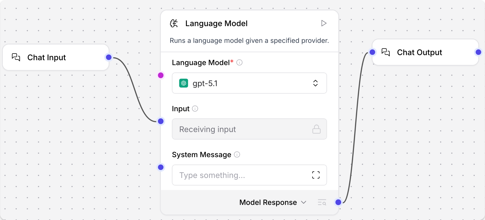
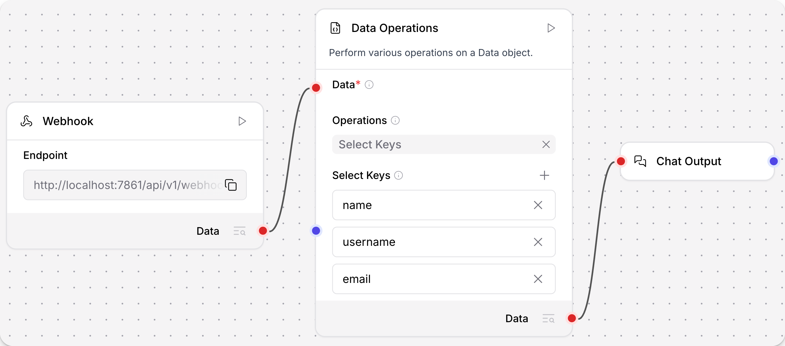
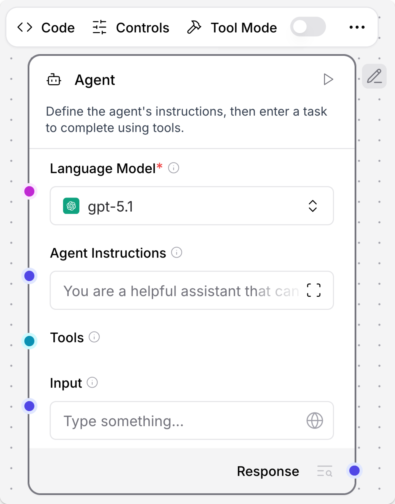
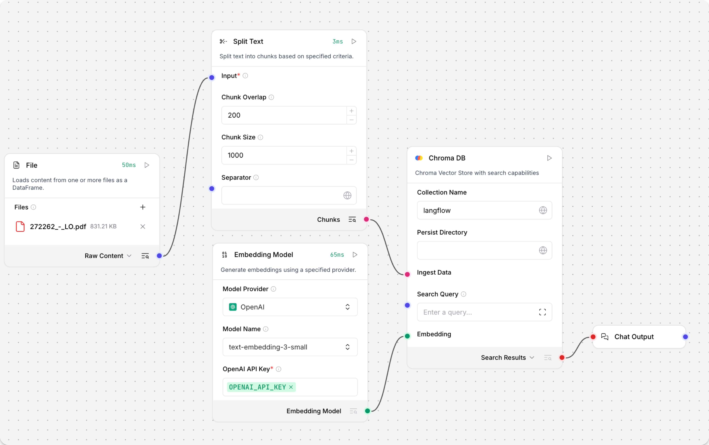
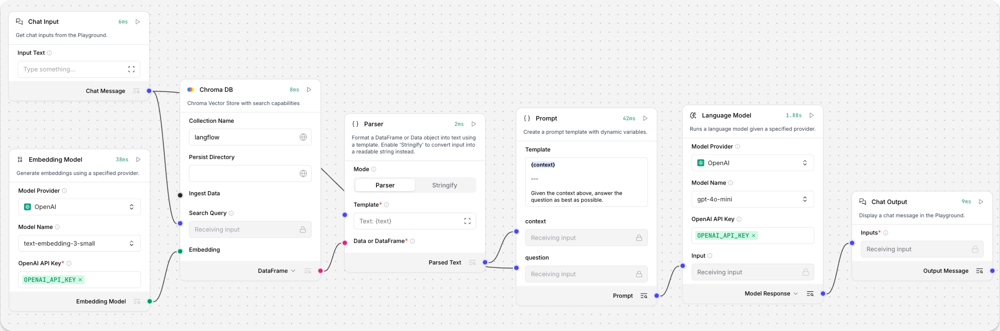
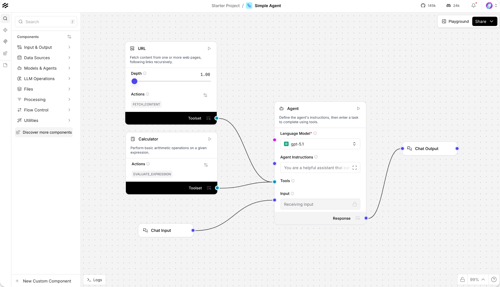
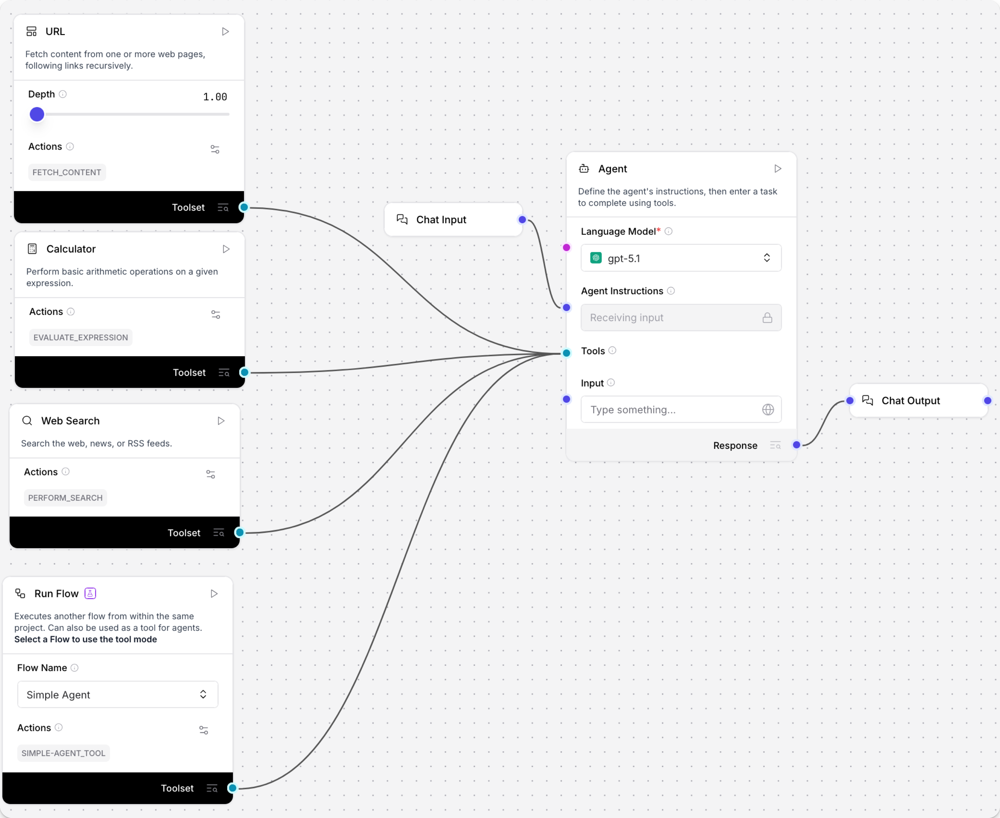
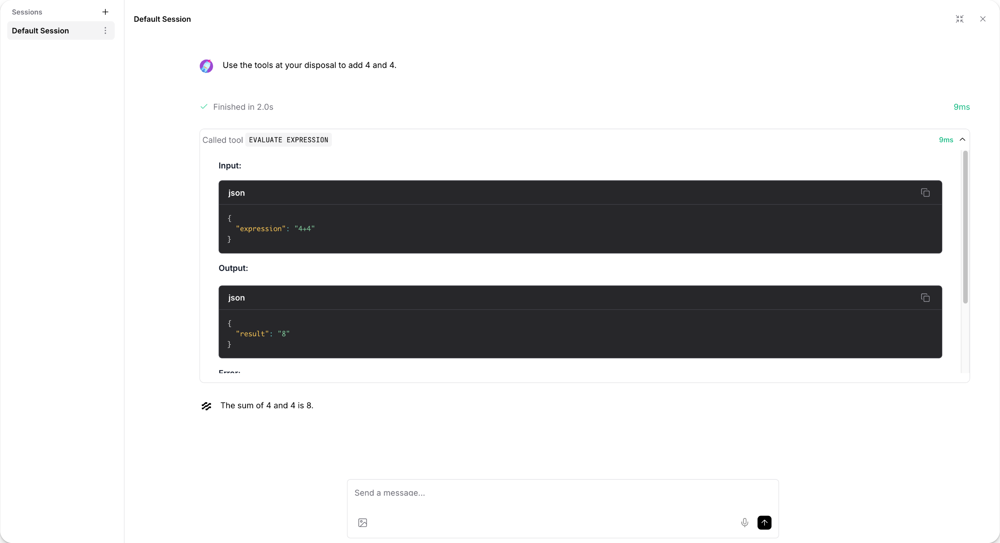
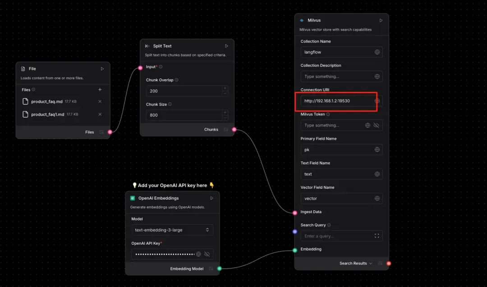

사내에서 Agent Builder를 활용하기 위한 Langflow 기초 교육자료
이 자료는 Langflow를 처음 접하는 구성원이 custom node를 직접 만들고, agent builder 관점에서 실제 업무 flow를 서비스 가능한 수준으로 설계하도록 돕는 기초 교육자료입니다. 긴 개발 문서를 그대로 읽히기보다 교육 순서, 코드 레시피, flow blueprint, 검증 체크리스트로 재구성했습니다.
교육 흐름
왜 이 순서로 배우는가
Langflow는 화면으로 연결하는 도구지만, 운영 품질은 각 node의 계약과 flow의 검증 방식에서 결정됩니다.
먼저 작게 만든다
하나의 node는 하나의 일만 맡습니다. LLM에게 줄 지시문 만들기, LLM 호출, 결과 해석, DB 조회, 최종 답변 생성을 한 파일에 몰아넣지 않습니다.
다음 노드가 읽을 결과 형식을 정한다
payload는 node가 다음 node에 넘기는 “결과 묶음”입니다. 성공 여부, 오류, 미리보기 행처럼 다음 node가 읽을 값을 일정한 이름으로 유지합니다.
큰 데이터는 요약해서 넘긴다
LLM에게 줄 지시문과 대화 상태에는 전체 행을 모두 넣지 않고 미리보기, 데이터 형식, 저장 위치 참조값만 전달합니다. 대용량 데이터는 저장소에 두고 `data_ref`로 연결합니다.
1. Custom Node 구현 기본
Langflow custom component는 Python class 하나로 만들지만, 실무에서는 “화면에 어떻게 보이고, 무엇을 받고, 무엇을 내보내고, 실패하면 어떻게 알려줄지”까지 정한 작은 부품입니다.
화면에 표시되는 기본 정보
`display_name`, `description`, `icon`, `name`은 Langflow 화면에서 node를 알아보기 위한 값입니다. `name`은 내부 식별에도 쓰이므로 자주 바꾸지 않습니다.
입력값
사용자가 직접 넣거나 앞 node에서 연결해 받는 값입니다. 짧은 글, 파일, 비밀값, 표 데이터처럼 목적에 맞는 input 타입을 고릅니다.
결과값
다음 node로 넘길 결과입니다. 사람이 읽을 메시지인지, JSON 같은 구조화 데이터인지, 표 데이터인지 명확히 정합니다.
실행 중 처리 방식
실패해도 다음 node가 읽을 수 있는 결과를 반환하고, UI 확인을 위해 `self.status`에는 짧은 실행 상태를 남깁니다.
헷갈리기 쉬운 용어를 먼저 풀어 읽기
공식 노드명과 코드 타입명은 영어로 남아 있는 경우가 많습니다. 처음 읽을 때는 아래처럼 바꿔 생각하면 됩니다.
Prompt
LLM에게 보내는 지시문입니다. “무엇을 참고해서 어떤 형식으로 답할지”를 적습니다.
Schema
결과의 모양입니다. 예를 들어 `route`, `answer`, `errors` 같은 키와 타입을 미리 정한 규칙입니다.
Parser / Normalizer
Parser는 결과를 읽을 수 있게 꺼내는 역할, Normalizer는 이름과 형식을 사내 기준에 맞게 정리하는 역할입니다.
Retriever
DB, API, 파일, 문서 저장소에서 필요한 근거를 찾아오는 node입니다. 한국어로는 “조회/검색 담당”에 가깝습니다.
Embedding / Vector
문장 의미를 숫자 좌표로 바꾼 값입니다. RAG에서 비슷한 문서를 찾기 위해 사용합니다.
Chunk
긴 문서를 검색하기 좋게 작게 나눈 조각입니다. 보통 페이지나 문단 단위로 나눕니다.
Manifest
처리가 끝난 뒤 확인용으로 남기는 요약표입니다. 몇 개를 읽었고, 무엇이 빠졌고, 경고가 있었는지 봅니다.
Branch
조건에 따라 갈라지는 흐름입니다. 예: 데이터 질문은 데이터 조회로, 문서 질문은 RAG 검색으로 보냅니다.
from lfx.custom import Component
from lfx.io import MessageTextInput, Output
from lfx.schema import Data
class HelloCompanyNode(Component):
display_name = "Hello Company Node"
description = "Return a standard Data payload from a short text input."
icon = "Box"
name = "HelloCompanyNode"
inputs = [
MessageTextInput(
name="text",
display_name="Text",
info="Short text entered by the user.",
value="hello",
)
]
outputs = [
Output(name="result", display_name="Result", method="build_result", types=["Data"])
]
def build_result(self) -> Data:
result = {"success": True, "text": str(self.text or "").strip(), "errors": []}
self.status = "Payload built"
return Data(data=result)작성 규칙
Custom component 구성 안에 함께 넣을 운영 포인트
아래 항목은 별도 기능처럼 외워두기보다 “이 component를 누가 입력하고, 다음 node가 무엇을 읽을지”를 정할 때 함께 확인하는 기준입니다.
- 01필요할 때만 보이는 입력사용자가 고른 옵션에 따라 관련 입력만 보여줍니다. 예: 인증 방식을 bearer로 고른 경우에만 API key 입력칸을 표시합니다.
- 02Agent가 필요할 때 호출하는 도구고정 순서로 항상 실행되는 flow가 아니라 Agent가 “필요할 때 이 component를 tool처럼 호출”해야 하는 경우에 씁니다. Agent가 직접 채울 질문, dataset_key, route, limit 같은 짧은 입력에만 `tool_mode=True`를 붙입니다.
- 03여러 결과를 동시에 보기실제 결과, 검수용 요약, 분기 결과처럼 output을 여러 개 동시에 연결해야 할 때 사용합니다. 선택되지 않은 길도 다음 node가 무시할 수 있는 결과 형식으로 반환합니다.
- 04`self.status`UI 카드에서 마지막 실행 상태를 빠르게 읽도록 짧고 민감정보 없는 메시지만 남깁니다.
- 05실행 전 값 보정`IntInput`, `FloatInput`, `DropdownInput` 기본값만 믿지 말고 method 안에서 범위, 빈값, 허용 목록을 한 번 더 확인합니다.
운영 설정 Input을 잘 쓰는 법
`BoolInput`, `IntInput`, `FloatInput`, `DropdownInput`은 보통 데이터 port가 아니라 component 실행 옵션입니다. 초보 개발자는 먼저 “사용자가 무엇을 바꾸면 UI가 어떻게 달라져야 하는가”와 “실행 전에 어떤 값을 보정해야 하는가”를 같이 설계하면 됩니다.
- `advanced=True`자주 바꾸지 않는 제한 시간, 점검 정보, 재시도 횟수, 기준값은 기본 화면에서 숨기고 고급 설정 영역으로 보냅니다.
- `real_time_refresh=True`이 input 값이 바뀌면 입력 화면을 다시 정리할 수 있게 표시합니다. 예: `parse_mode=multimodal`을 고르면 vision 모델 선택 입력을 보여줍니다.
- `dynamic=True` + `show=False`처음에는 숨겨두고, 사용자가 특정 옵션을 고른 경우에만 보여줄 조건부 입력에 씁니다.
- `tool_mode=True`이 component를 Agent tool로 노출할 때, Agent가 직접 채워도 되는 입력값에만 붙입니다. 고정 flow에서 사람이 설정하는 값이나 secret에는 붙이지 않습니다.
from lfx.custom import Component
from lfx.io import BoolInput, DropdownInput, FloatInput, IntInput, Output
from lfx.schema import Data
class DocumentLoaderSettings(Component):
display_name = "Document Loader Settings"
description = "Build a small settings payload for document flows."
icon = "Settings2"
name = "DocumentLoaderSettings"
inputs = [
DropdownInput(
name="parse_mode",
display_name="Parse Mode",
info="문서를 읽는 방식을 고릅니다. multimodal이면 vision 설정이 추가로 필요합니다.",
options=["text_only", "ocr", "multimodal"],
value="text_only",
# 이 field가 바뀌면 입력 화면을 다시 정리할 수 있게 표시합니다.
# 즉, 실행 함수가 도는 것이 아니라 설정 화면을 다시 그릴 기회를 주는 옵션입니다.
real_time_refresh=True,
),
BoolInput(
name="include_debug",
display_name="Include Debug",
info="결과 payload에 설정 원문을 함께 넣을지 결정합니다.",
value=False,
advanced=True,
),
IntInput(
name="max_pages",
display_name="Max Pages",
info="한 번에 처리할 최대 페이지 수입니다.",
value=30,
advanced=True,
),
FloatInput(
name="similarity_threshold",
display_name="Similarity Threshold",
info="검색 결과를 근거로 인정할 최소 유사도입니다.",
value=0.72,
advanced=True,
),
DropdownInput(
name="vision_model_profile",
display_name="Vision Model Profile",
info="parse_mode가 multimodal일 때만 필요한 설정입니다.",
options=["fast", "balanced", "accurate"],
value="balanced",
dynamic=True,
show=False,
),
]
outputs = [
Output(name="settings", display_name="Settings", method="build_settings", types=["Data"])
]
def update_build_config(self, build_config: dict, field_value, field_name: str | None = None) -> dict:
# 사용자가 parse_mode를 바꿨을 때 입력 화면을 어떻게 바꿀지 정합니다.
# 여기서는 multimodal을 선택한 경우에만 vision_model_profile field를 보여줍니다.
if field_name == "parse_mode":
needs_vision = field_value == "multimodal"
build_config["vision_model_profile"]["show"] = needs_vision
build_config["vision_model_profile"]["required"] = needs_vision
return build_config
def build_settings(self) -> Data:
# UI 입력은 실행 직전에 한 번 더 보정합니다.
try:
max_pages = int(self.max_pages or 30)
except Exception:
max_pages = 30
max_pages = max(1, min(max_pages, 300))
try:
threshold = float(self.similarity_threshold or 0.72)
except Exception:
threshold = 0.72
threshold = max(0.0, min(threshold, 1.0))
result = {
"success": True,
"parse_mode": self.parse_mode,
"max_pages": max_pages,
"similarity_threshold": threshold,
"vision_model_profile": self.vision_model_profile if self.parse_mode == "multimodal" else None,
"errors": [],
}
if self.include_debug is True:
result["debug"] = {"selected_parse_mode": self.parse_mode}
self.status = f"mode={self.parse_mode}, pages={max_pages}, threshold={threshold}"
return Data(data=result)1) 사용자가 `parse_mode` 값을 바꿉니다. 2) Langflow UI가 이 field에 `real_time_refresh=True`가 있음을 보고 입력 화면을 다시 정리할 기회를 줍니다. 3) 예시 코드에서는 그때 `vision_model_profile`을 보이게 하거나 필수 입력으로 바꿉니다. 실제 문서 처리나 LLM 호출은 여기서 하지 않고, 사용자가 node를 실행할 때 실행 method에서 처리합니다.
2. Input / Output 타입 선택
입력과 출력 타입은 화면 연결 가능 여부와 운영 안전성을 동시에 결정합니다. 의도를 숨기는 문자열 입력보다 타입이 드러나는 입력을 우선합니다.
| 분류 | 주요 타입 | 언제 쓰는가 | 운영 팁 |
|---|---|---|---|
| 텍스트 | `MessageTextInput`, `StrInput`, `MultilineInput` | 질문, 짧은 설정, LLM 지시문 양식, JSON 원문 | 정해진 선택지는 `DropdownInput`으로 바꾸고, JSON은 실행 method 안에서 dict로 읽어냅니다. |
| 구조화 데이터 | `DataInput`, `Data` output | node 사이에서 JSON처럼 key/value로 된 결과 묶음을 넘길 때 | `input_types=["Data", "JSON"]`를 명시하고 다음 node가 읽을 key 이름을 유지합니다. |
| 테이블 | `DataFrameInput`, `DataFrame` output | Table/DataFrame port와 연결하거나 미리보기 표를 반환할 때 | LLM에는 전체 table 대신 표 요약과 미리보기 행만 넘깁니다. |
| 파일 | `FileInput` | CSV, JSON, TXT, PDF 등 사용자가 업로드한 파일 처리 | 경로/객체/list 형태를 모두 처리하고 대용량은 `data_ref`로 전환합니다. |
| 운영 설정 | `BoolInput`, `IntInput`, `FloatInput`, `DropdownInput` | 점검 정보 포함 여부, 실제 저장 없이 테스트 실행, 제한 시간, 처리 개수, 실행 방식 같은 옵션 | 숫자 범위 제한, 기본값, 고급 설정 영역 분리를 기본으로 둡니다. |
| 보안값 | `SecretStrInput` | API key, token, password | 화면 상태, 점검 정보, 오류 결과에 비밀값을 절대 출력하지 않습니다. |
| 객체 연결 | `HandleInput`, `ModelInput`, `PromptInput` | LLM, 의미 검색용 숫자 변환기, 검색 담당 node, tool 객체를 연결할 때 | JSON 결과 묶음 안에 실행 중에만 쓰는 객체를 넣지 않고 별도 port로 연결합니다. |
`Data`
가장 범용적인 구조화 결과입니다. 정해진 결과 형식, 오류 정보, 조회 결과, 대화 상태를 넘길 때 기본값으로 사용합니다.
`Message`
Chat Input/Output, LLM 응답처럼 대화형 메시지의 의미가 중요할 때 사용합니다. 단순 dict 전달에는 과용하지 않습니다.
`DataFrame`
표 형태로 보여주거나 DataFrame port와 직접 연결할 때 사용합니다. 컬럼/형식 설명과 오류까지 함께 전달해야 하면 별도 `Data` output도 둡니다.
Output port는 어떤 input에 연결하는가
Langflow 공식 문서 기준으로 flow를 만들 때는 같은 데이터 타입의 output/input port를 연결하는 것이 기본입니다. 타입이 다르면 먼저 Parser, Type Convert, JSON Operations, Table Operations 같은 변환용 component를 중간에 둡니다.
| Output port | 바로 연결하기 좋은 Input / Component | 중간 변환이 필요한 경우 | 사내 custom node 예시 |
|---|---|---|---|
| Chat Output input, Language Model/Agent input, Prompt Template 변수, Structured Output의 Input Message | 정해진 JSON/Table 형태로 바꿔야 하면 Structured Output 또는 Parser를 사용합니다. | 최종 답변 생성 node, 사용자 질문 정리 node, 문서 요약 node | |
| JSON / Data | `DataInput(input_types=["Data", "JSON"])`, JSON Operations, Parser의 Data/JSON input, Type Convert JSON input | 사용자에게 채팅으로 보여줄 때는 Parser 또는 Chat Output이 읽을 수 있는 Message로 변환합니다. | 결과 묶음 정리 node, API 조회 node, Route Gate, 조회 결과 합치기 node |
| Table / DataFrame | `DataFrameInput`, Table Operations의 Table input, Parser의 Table input, Chat Output input | JSON node로 넘길 때는 Type Convert 또는 표 요약 custom node로 컬럼/미리보기 결과를 만듭니다. | Safe DataFrame Profiler, 파일 미리보기 표, 분석 결과 표 |
| LanguageModel | Agent의 Language Model input, Structured Output의 Language Model input, LLM이 필요한 component input | LLM 응답 텍스트가 아니라 모델 연결 객체입니다. JSON 결과 묶음 안에 넣지 않습니다. | 공통 LLM provider preset, 모델 라우터 |
| Tool / Toolset | Agent의 Tools input | 일반 데이터 분석 흐름에 연결하지 않습니다. Agent가 호출할 도구 목록으로만 연결합니다. | Internal API Retriever tool, Run Flow tool, catalog lookup tool |
대화형 흐름
Chat Input → Agent/LLM → Chat Output. 질문과 최종 답변이 중심인 flow의 기본 연결입니다.
업무 데이터 흐름
조회 담당 → 결과 정리 → 조건 분기 → 결과 합치기. 조건, 결과, 오류, 점검 정보를 안정적으로 넘깁니다.
분석/표 흐름
File/API → Type Convert → Table Operations → 표 요약 node. 계산과 화면 미리보기를 분리합니다.
Agent 도구 흐름
도구로 열어 둔 component 또는 Run Flow → Agent Tools. Agent가 필요할 때만 호출하게 합니다.
Custom node input class별로 받을 수 있는 output
Custom component의 `inputs`에 어떤 class를 쓰느냐에 따라 canvas에 보이는 field/port 성격이 달라집니다. 아래 표는 사내 node 작성 시 기본값으로 삼을 연결 기준입니다. 실제 Langflow 화면에서는 port에 마우스를 올리거나 클릭해 compatible component 검색 결과를 최종 확인합니다.
| Custom input class | 주로 받는 앞 node output | 연결/사용 방식 | 주의할 점 |
|---|---|---|---|
| `DataInput` | JSON / Data | 조회 node, 결과 해석 node, 결과 정리 node, 분기 node가 만든 구조화 결과를 받습니다. `input_types=["Data", "JSON"]`를 명시하는 편이 안전합니다. | 대용량 row 전체를 계속 넘기지 말고 `preview_rows`, `row_count`, `data_ref` 중심으로 넘깁니다. |
| `DataFrameInput` | Table / DataFrame | File loader, Type Convert, Table Operations, 분석 node의 table output을 받습니다. | LLM 지시문에 바로 넣기보다 표 요약 node를 거쳐 컬럼 정보와 미리보기로 줄입니다. |
| `MessageTextInput`, `MultilineInput`, `StrInput` | 사용자 질문, LLM 지시문 조각, 짧은 문자열 설정을 받습니다. Tool Mode에서는 Agent가 채워 넣을 짧은 입력값이 될 수 있습니다. | 긴 JSON이나 table을 문자열로 억지 전달하지 않습니다. 구조화 결과는 `DataInput`, 표는 `DataFrameInput`을 씁니다. | |
| `PromptInput` | Prompt Template 또는 LLM 지시문처럼 자연어 양식을 받습니다. | 업무 데이터 자체를 지시문 입력칸에 섞지 말고 참고 데이터와 지시문 양식을 분리합니다. | |
| `ModelInput` | LanguageModel | Agent, Structured Output, Smart Transform처럼 LLM 객체가 필요한 node에서 사용합니다. | 이 값은 모델 연결 객체입니다. `Data(data=...)` 안에 넣는 JSON 값이 아닙니다. |
| `HandleInput` | 지정한 handle type | 의미 검색용 숫자 변환기, 검색 담당 node, memory, vector store, tool 같은 실행 중 객체를 받을 때 사용합니다. | 연결 가능한 타입은 `input_types` 또는 component 구현에 좌우됩니다. 사내 공통 node에서는 가능한 구체적으로 제한합니다. |
| `FileInput` | 대개 앞 node output이 아니라 업로드 field | 사용자가 파일을 직접 선택하게 하고, node 내부에서 path/object/list 형태를 방어적으로 읽습니다. | `FileInput` 자체를 다음 node로 넘길 데이터로 생각하지 않습니다. loader node가 `Data`, `Message`, `DataFrame` 중 하나를 반환해야 다음 연결이 시작됩니다. |
| `SecretStrInput` | 대개 연결하지 않음 | API key, token, password 같은 운영 비밀값을 component 설정으로 받습니다. | 다른 output에서 비밀값을 흘려 넣는 구조는 피합니다. 화면 상태, 점검 정보, 결과값에 비밀값을 절대 쓰지 않습니다. |
| `BoolInput`, `IntInput`, `FloatInput`, `DropdownInput` | 대개 연결하지 않음 | dry_run, timeout, limit, mode, provider 같은 실행 설정입니다. | 업무 데이터 흐름이 아니라 실행 설정값입니다. 숫자 범위 제한과 기본값을 둡니다. `DropdownInput`은 Agent가 채울 짧은 입력값으로 쓸 수 있습니다. |
| `CodeInput` | 대개 연결하지 않음 | 사용자/LLM이 작성한 code snippet이나 transform script를 field로 받습니다. | 그대로 `exec`하지 않습니다. allowlist, timeout, sandbox, AST 검사 같은 제한 실행이 필요합니다. |
일반 Langflow 연결 가능 여부 빠른 판단표
직접 만든 node가 아니어도 판단 원칙은 같습니다. 같은 타입끼리는 직접 연결하고, 타입이 다르면 중간에 변환 node를 둡니다. 특히 Langflow 1.9 이후 문서에서는 기존 `Data` 연결점을 `JSON`으로 부르는 경우가 있으므로 둘을 같은 계열로 봅니다.
| 앞 node에서 나온 값 | 직접 연결 가능성이 높은 input | 자주 쓰는 다음 node | 다른 타입으로 바꾸려면 |
|---|---|---|---|
| Agent/Language Model input, Chat Output, Structured Output의 Input Message, 지시문/메시지 계열 input | Prompt Template, Structured Output, Chat Output, Message History | 정해진 JSON/Table로 뽑아야 하면 Structured Output을 쓰고, text만 뽑을 때는 Parser의 Stringify 모드를 씁니다. | |
| JSON / Data | DataInput, JSON Operations, Parser Data/JSON input, Type Convert JSON input, Chat Output | JSON Operations, Parser, Type Convert, 직접 만든 정리/분기 node | 사용자에게 보여줄 text는 Parser로 Message로 만들고, 표 처리는 Type Convert로 Table로 바꿉니다. |
| Table / DataFrame | DataFrameInput, Table Operations, Parser Table input, Type Convert Table input, Chat Output | Table Operations, Parser, Safe DataFrame Profiler, Chat Output | JSON 결과 묶음이 필요하면 표 요약 node나 Type Convert를 쓰고, 자연어 답변에는 Parser/요약 node를 둡니다. |
| LanguageModel | Agent Language Model input, Structured Output Language Model input, Smart Transform LLM input | Agent, Structured Output, Smart Transform | 모델이 만든 답변이 필요하면 LLM/Agent node를 실행해 Message 또는 정해진 JSON/Table 결과를 받아야 합니다. |
| Embedding / EmbeddingModel | Vector Store, 의미 검색 node, 문서 저장 node | Vector Store, Retriever, RAG 문서 적재 flow | 문장을 숫자로 바꾼 값 자체를 Chat Output에 바로 보내지 않습니다. 검색 결과 JSON/Message로 변환합니다. |
| Tool / Toolset | Agent Tools input | Agent, Run Flow as Tool, custom tool component | tool 실행 결과는 Agent의 실행 기록으로 돌아옵니다. 별도 데이터 흐름이 필요하면 tool 내부 결과를 Data/Message로 내보내도록 설계합니다. |
| File / Raw file | File parser, file loader, document extraction component | Read File, Doc parser, custom File Dataset Loader | 분석 flow로 보내기 전 Text/Message, JSON/Data, Table/DataFrame 중 하나로 명확히 변환합니다. |
| 기본 값 (`str`, `int`, `bool`, `float`) | 동일한 기본값 입력칸 또는 text/value input | 간단 계산 node, template 변수, 설정 field | 운영 flow에서는 값을 그대로 길게 연결하기보다 Data/Message로 한 번 포장하는 편이 확인하기 쉽습니다. |
Python 코드에서 input / output을 넣는 위치
Custom component의 `inputs`와 `outputs`는 class 안에 선언합니다. `inputs`는 Langflow 화면의 입력칸과 왼쪽 연결점을 만들고, `outputs`는 오른쪽 연결점과 실제 실행 함수를 연결합니다.
Input 선언 기준
`name`은 Python 함수에서 `self.name`으로 읽는 내부 변수명입니다. `display_name`은 화면 이름, `info`는 도움말, `required`는 필수 여부, `advanced`는 고급 설정 영역에 숨길지 여부입니다.
Output 선언 기준
`Output(method="build_result")`는 오른쪽 연결점이 실행될 때 `build_result()` 함수를 호출한다는 뜻입니다. 이 함수는 `Data`, `Message`, `DataFrame`처럼 다음 node가 받을 수 있는 타입으로 반환해야 합니다.
| 옵션 | 어디에 쓰나 | 의미 | 초보자 기준 |
|---|---|---|---|
| `name` | 모든 Input, Output | 코드에서 접근하는 고정 식별자입니다. | 영문 snake_case로 쓰고 자주 바꾸지 않습니다. |
| `display_name` | 모든 Input, Output | Langflow 화면에 보이는 이름입니다. | 사용자가 읽기 쉬운 짧은 이름으로 씁니다. |
| `info` | Input | 입력 옆 도움말입니다. | 어떤 값을 넣어야 하는지 한 문장으로 씁니다. |
| `value` | Input | 기본값입니다. | 실습자가 바로 실행할 수 있는 안전한 값을 둡니다. |
| `required` | Input | 필수 입력 여부입니다. | 없으면 실행할 수 없는 값만 `True`로 둡니다. |
| `advanced` | Input | 기본 화면에서 숨겨도 되는 운영 옵션입니다. | 점검 정보, 제한 시간, 처리 개수, 기준값처럼 자주 바꾸지 않는 설정은 보통 `advanced=True`가 좋습니다. |
| `input_types` | `DataInput`, `DataFrameInput` 등 | 어떤 output port 타입을 받을지 제한합니다. | `DataInput(..., input_types=["Data", "JSON"])`처럼 명시하면 연결 실수가 줄어듭니다. |
| `options` | `DropdownInput` | 선택 가능한 값 목록입니다. | mode, provider, route처럼 정해진 값은 text input보다 dropdown을 씁니다. |
| `real_time_refresh` | Input | 이 입력값 변경 시 설정 화면을 다시 계산해야 한다고 Langflow UI에 알립니다. | 선택값에 따라 다른 입력의 표시 여부, 필수 여부, 선택지를 바꿀 때만 씁니다. |
| `dynamic`, `show` | Input | 조건부 field를 처음에는 숨길 수 있습니다. | 예: 인증 방식이 `bearer`일 때만 token field 표시. |
| `tool_mode` | 일부 Input | component를 Agent tool로 쓸 때 Agent가 채울 argument로 노출합니다. | 사람이 미리 고정하는 설정값이 아니라 질문, route, limit처럼 Agent가 판단해 넣을 값에만 붙입니다. |
| `types` | `Output` | 화면 port 타입 힌트입니다. | 반환 객체와 맞춰 `["Data"]`, `["Message"]`, `["DataFrame"]`처럼 둡니다. |
| `method` | `Output` | output port가 실행할 class method 이름입니다. | 문자열과 실제 method 이름이 1글자라도 다르면 실행되지 않습니다. |
from __future__ import annotations
import json
from typing import Any
from lfx.custom import Component
from lfx.io import BoolInput, DataInput, DropdownInput, IntInput, MessageTextInput, Output
from lfx.schema import Data
from lfx.schema.message import Message
def _as_payload(value: Any) -> dict:
"""Data, dict, JSON string, Message를 모두 dict payload로 맞춥니다."""
if value is None:
return {}
if isinstance(value, dict):
return value
data = getattr(value, "data", None)
if isinstance(data, dict):
return data
text = getattr(value, "text", None) or getattr(value, "content", None)
if isinstance(text, str) and text.strip():
try:
parsed = json.loads(text)
return parsed if isinstance(parsed, dict) else {"text": text}
except Exception:
return {"text": text}
if isinstance(value, str) and value.strip():
try:
parsed = json.loads(value)
return parsed if isinstance(parsed, dict) else {"text": value}
except Exception:
return {"text": value}
return {}
class InputOutputContractExample(Component):
display_name = "Input Output Contract Example"
description = "Shows where inputs and outputs are declared in a custom component."
icon = "Cable"
name = "InputOutputContractExample"
inputs = [
MessageTextInput(
name="request_text",
display_name="Request Text",
info="사용자 질문이나 처리 지시문입니다. method 안에서는 self.request_text로 읽습니다.",
value="요약해줘",
required=True,
tool_mode=True,
),
DataInput(
name="payload",
display_name="Payload",
info="앞 노드에서 넘어온 Data/JSON payload입니다.",
input_types=["Data", "JSON"],
required=False,
),
DropdownInput(
name="mode",
display_name="Mode",
info="실행 모드를 고릅니다.",
options=["summary", "extract", "validate"],
value="summary",
),
IntInput(
name="preview_limit",
display_name="Preview Limit",
info="output에 포함할 preview item 수입니다.",
value=5,
advanced=True,
),
BoolInput(
name="include_debug",
display_name="Include Debug",
info="디버그 정보를 output payload에 포함할지 정합니다.",
value=False,
advanced=True,
),
]
outputs = [
Output(
name="result",
display_name="Result",
method="build_result",
types=["Data"],
),
Output(
name="message",
display_name="Message",
method="build_message",
types=["Message"],
),
]
def build_result(self) -> Data:
payload = _as_payload(self.payload)
limit = max(1, min(int(self.preview_limit or 5), 50))
result = {
"success": True,
"request_text": str(self.request_text or "").strip(),
"mode": self.mode,
"payload_keys": list(payload.keys()),
"preview": payload.get("rows", [])[:limit] if isinstance(payload.get("rows"), list) else [],
"errors": [],
}
if self.include_debug:
result["debug"] = {"input_type": type(self.payload).__name__, "limit": limit}
self.status = f"mode={self.mode}, keys={len(result['payload_keys'])}"
return Data(data=result)
def build_message(self) -> Message:
data = self.build_result().data
text = (
f"mode={data['mode']}\n"
f"request={data['request_text']}\n"
f"payload_keys={', '.join(data['payload_keys']) or '(none)'}"
)
return Message(text=text)실수하기 쉬운 연결
FileInput 자체는 다음 node로 넘기는 데이터가 아니다
`FileInput`은 업로드/경로 입력 field입니다. 다음 node로 넘기려면 loader node가 `Data`, `Message`, `DataFrame` 중 하나를 반환해야 합니다.
Secret/Bool/Int는 운영 설정이다
API key, timeout, preview limit 같은 값은 보통 port가 아니라 component 실행 옵션입니다. output payload로 다시 흘리지 않습니다.
Toolset은 Agent Tools로만 보낸다
Tool output은 Agent가 호출할 action 목록입니다. JSON/Data 처리 branch에 꽂는 데이터 payload가 아닙니다.
Langflow 기본 노드 모음
Custom component를 만들기 전에, 캔버스에서 가장 자주 쓰는 기본 노드의 역할과 연결 타입을 먼저 익힙니다. 아래 표는 초보자가 노드를 배치하고 선을 연결할 때 바로 확인하는 기준표입니다.
처음 배울 때 추천하는 기본 노드 묶음
처음부터 모든 component를 외우기보다, 아래 네 묶음을 먼저 실습하면 대부분의 사내 flow를 읽을 수 있습니다.
대화 입출력
`Chat Input`, `Chat Output`, `Prompt Template`, `Language Model`로 질문과 답변의 기본 흐름을 만듭니다.
파일과 구조화
`Read File`, `Parser`, `Structured Output`, `Type Convert`, `JSON Operations`로 파일 내용을 JSON/Message/Table로 바꿉니다.
문서 검색
`Split Text`, `Embedding Model`, `Vector Store`, `Retriever`로 문서를 잘게 나누어 저장하고, 질문에 맞는 근거를 찾습니다.
반복과 호출
`Loop`, `Run Flow`, `Agent`로 여러 건을 반복 처리하거나 다른 flow/tool을 호출합니다.
공식 문서 화면으로 보는 기본 노드
아래 이미지는 Langflow 공식 문서에 있는 실제 component/flow 화면입니다. 교육 때는 먼저 이미지에서 node 이름과 연결점 방향을 확인하고, 바로 아래 표에서 input/output 타입을 다시 확인하면 연결 실수를 줄일 수 있습니다.

Chat Input / Chat Output
Chat Input이 사용자의 text를 `Message`로 만들고, Language Model의 `Model Response`가 Chat Output으로 들어가는 가장 기본적인 대화 flow입니다.
Source: Langflow Chat Input and Output documentation
Prompt Template 변수 input
Prompt 안에 `{context}`, `{question}` 같은 변수를 쓰면 component에 같은 이름의 input field가 생깁니다. 질문과 검색 근거를 따로 연결할 때 자주 씁니다.
Source: Langflow Components overview documentation
Structured Output
자유 답변 대신 정해진 모양의 `JSON/Table`을 만들 때 씁니다. 문서 추출, 보고서 필드 추출, 품질 점검 결과 정리에 적합합니다.
Source: Langflow Structured Output documentation
Type Convert
앞 노드의 output이 다음 노드 input 타입과 맞지 않을 때 중간에 둡니다. 예시처럼 `Table` 검색 결과를 `Message`로 바꿔 Prompt에 넣을 수 있습니다.
Source: Langflow Type Convert documentation
JSON Operations
Webhook/API/custom component가 만든 `JSON/Data`에서 필요한 key를 고르거나 필터링합니다. 여러 개를 이어 간단한 결과 묶음 정리를 할 수 있습니다.
Source: Langflow JSON Operations documentation
Agent
Agent는 사용자 `Message`, 모델 연결, `Tools`를 함께 받아 필요한 tool을 골라 실행합니다. Tool output은 일반 Data가 아니라 Agent Tools input으로 연결합니다.
Source: Langflow Components overview documentation기본 노드별 사용 용도와 Input / Output
Langflow 화면의 실제 연결점 이름은 버전과 모델 제공사에 따라 조금 달라질 수 있습니다. 그래도 판단 기준은 같습니다. output 타입이 `Message`이면 message/text 계열 input으로, `JSON/Data`이면 Data/JSON 계열 input으로, `Table/DataFrame`이면 table 계열 input으로 연결합니다.
| 기본 노드 | 언제 쓰는가 | 주요 input | 주요 output | 바로 연결하기 좋은 다음 노드 | 초보자 주의점 |
|---|---|---|---|---|---|
| `Chat Input` | Playground/API에서 사용자의 질문, 지시문, 채팅 메시지를 flow로 넣을 때 사용합니다. | 사용자가 입력하는 text/message. 파일 첨부 옵션은 flow 설계에 따라 달라집니다. | `Message` | `Agent` Input, `Language Model` Input, `Prompt Template` 변수, custom normalizer의 `request_text` | 업무 데이터 전체를 Chat Input text에 억지로 넣지 않습니다. 정리된 결과 묶음은 `Data/JSON`으로 별도 관리합니다. |
| `Chat Output` | 사용자에게 최종 결과를 보여주는 마지막 노드입니다. 중간 디버그 확인에도 자주 씁니다. | `Message`, `JSON`, `Table` 계열 input을 받을 수 있습니다. | Playground/API 응답 메시지 | 마지막 노드라 보통 다음 연결은 없습니다. 필요하면 여러 Chat Output으로 중간 결과를 확인합니다. | LLM 답변만 보지 말고 Parser/Type Convert 결과도 Chat Output에 임시 연결해 어떤 타입으로 나오는지 확인하면 실수가 줄어듭니다. |
| `Read File` | PDF, TXT, CSV, DOCX, PPTX 같은 파일을 업로드/선택해 텍스트, markdown, table, JSON처럼 정리된 데이터로 읽을 때 사용합니다. 예전 자료의 `File` component는 현재 화면에서 `Read File`로 찾는 경우가 많습니다. | `Files` 또는 `Select files`, 저장 위치, 구분자, 오류 무시 여부 같은 기본 파일 읽기 옵션 | `Raw Content` 또는 `Markdown` 계열은 보통 `Message`, 표/JSON처럼 구조화된 결과는 환경에 따라 `Data`, `Table`, `DataFrame` 계열입니다. | `Chat Output`, `Prompt Template`, `Split Text`, `Parser`, `Structured Output`, `Type Convert` | 파일 확인은 먼저 `Read File` 노드 자체를 실행하고 Inspect Output으로 봅니다. 이 교육에서는 고급 파서 옵션에 의존하지 않고 기본 output이 비면 PDF를 텍스트 PDF로 다시 준비하거나 이미지 PDF 전용 custom flow로 분기합니다. |
| `Parser` | JSON/Table/DataFrame에서 필요한 값을 양식에 맞춰 뽑아 사람이 읽을 수 있는 text/message로 바꿀 때 사용합니다. | `Data or DataFrame`, 출력 양식 문장. Mode가 있는 경우 Parser/Stringify를 선택합니다. | `Parsed Text` 또는 text `Message` | `Chat Output`, `Prompt Template` context, `Language Model` Input | Parser는 “Message를 JSON으로 바꾸는 노드”가 아닙니다. 구조화 input을 Message로 풀어주는 쪽에 가깝습니다. |
| `Prompt Template` | 사용자 질문, 참고 문서, 출력 규칙을 하나의 LLM 지시문으로 조립할 때 사용합니다. | `{question}`, `{context}` 같은 변수 input. 변수명은 지시문 안의 중괄호 이름과 맞아야 합니다. | `Prompt` 또는 `Message` 계열 | `Language Model` System Message/Input, `Agent` 지시문, Structured Output 지시문 | 검색 결과 JSON을 그대로 붙이면 길고 불안정합니다. 필요하면 Parser로 참고 문장만 만든 뒤 Prompt에 넣습니다. |
| `Language Model` | LLM에게 답변 생성, 요약, 분류, 추출을 시킬 때 사용합니다. | `Input`, `System Message`, 모델 제공사별 model/api key/options | `Model Response`는 `Message`입니다. 일부 노드는 `LanguageModel` 객체 output을 Agent/Structured Output에 연결합니다. | `Chat Output`, `Parser`, `Structured Output`, `Agent` | `Model Response(Message)`와 `LanguageModel 객체`는 다릅니다. Agent의 Language Model input에는 답변 text가 아니라 모델 연결 객체 output을 연결합니다. |
| `Structured Output` | LLM 답변을 자유 텍스트가 아니라 정해진 JSON/Table 모양으로 받고 싶을 때 사용합니다. | `Input Message`, `Language Model`, 결과 모양/형식 정의 | `JSON`, `Table`, `Data` 계열 정리된 결과 | `Parser`, `JSON Operations`, `Type Convert`, custom 검증 node, `Chat Output` | 뽑아야 할 항목을 모호하게 쓰면 결과 모양이 흔들립니다. 필수 항목, 타입, 값이 없을 때 넣을 값을 지시문에 적습니다. |
| `Type Convert` | `Message`, `JSON`, `Table` 사이 타입을 맞춰야 할 때 사용합니다. Run Flow 결과를 다시 JSON으로 복원할 때 특히 자주 씁니다. | 변환할 input과 목표 output type | 설정한 타입에 따라 `Message`, `JSON`, `Table` 등 | `Parser`, `JSON Operations`, `Table Operations`, `Chat Output`, custom component | 문자열이 JSON처럼 보여도 실제로는 `Message`일 수 있습니다. Type Convert로 바꾼 뒤 다음 노드 input 타입과 맞춥니다. |
| `JSON Operations` | JSON/Data 결과 묶음에서 key 선택, 병합, 필터링, 간단한 구조 변경이 필요할 때 사용합니다. | `JSON/Data` input, operation 설정, path/key | `JSON/Data` | `Parser`, `Route Gate`, `Prompt Template`, custom normalizer | 복잡한 업무 규칙은 JSON Operations에 과하게 쌓기보다 custom component로 분리하는 편이 유지보수에 좋습니다. |
| `Current Date/Time` | 화면에 현재 날짜/시간 계열 노드가 보이는 환경에서 “오늘”, “이번 주”, “마감 기준” 질문에 실행 시점 context를 넣을 때 사용합니다. | timezone, format, locale 같은 표시 기준 | `Message` 또는 `Data` 계열 현재 시간 context | `Prompt Template`, `Structured Output`, route 판단용 custom component | 서버 timezone이 사용자 PC와 다를 수 있습니다. 노드가 보이지 않거나 timezone을 고정해야 하면 Current Time Context를 사용합니다. |
| `Smart Router` | 사용자 질문을 여러 흐름 중 하나로 보내고 싶을 때 사용합니다. 예: 데이터 조회, 문서 RAG, 현재 시간 답변, 일반 답변. | 사용자 질문 `Message`, route 후보/설명, 선택 기준 | 선택된 route 또는 branch decision `Message/JSON/Data` 계열 | Smart Route Payload Builder, `Route Gate`, 각 branch 첫 노드 | 서버 버전에 Smart Router가 없으면 `Structured Output`으로 `route` enum을 만들고 같은 방식으로 `Route Gate`에 연결합니다. |
| `Split Text` | 긴 문서 텍스트를 RAG 색인용 chunk로 나눌 때 사용합니다. | 문서 `Message/Text/JSON/Table`, 조각 크기, 앞뒤 겹침 크기 | 문서 조각 목록 형태의 `Data/JSON/Table` 계열 | `Embedding Model`, `Vector Store`, Milvus/Chroma 저장 component | 사용자가 질문할 때마다 Split Text를 다시 실행하지 않습니다. 문서를 저장하는 별도 flow에서 미리 문서 조각을 만들어 vector DB에 저장합니다. |
| `Embedding Model` | 질문이나 문서 조각을 의미 검색용 숫자값으로 바꿀 때 사용합니다. | text/query/문서 조각, 모델 제공사별 model 설정 | `Embeddings` 또는 embedding model handle | `Vector Store`, `Retriever`, Milvus/Chroma component | 문서 저장과 질문 검색에서 같은 embedding 모델과 차원을 써야 검색 품질과 연결이 안정적입니다. |
| `Vector Store / Retriever` | 문서 조각을 저장하거나, 질문을 숫자로 바꾼 값으로 관련 문서를 검색할 때 사용합니다. | 저장할 데이터, embedding, 검색 문장, collection/connection 설정 | 검색 결과 `Data/JSON/Table`, 검색 담당 객체, 저장된 문서 정보 | `Parser`, `Prompt Template`, `Language Model`, `Chat Output` | 문서를 저장하는 flow와 사용자가 질문하는 flow를 분리합니다. 같은 collection을 보더라도 실행 시점은 따로 관리하는 것이 운영에 편합니다. |
| `Loop` | CSV row, 문서 페이지, 테스트 질문 목록처럼 여러 item에 같은 처리를 반복할 때 사용합니다. | `Inputs`는 list `JSON` 또는 `Table`, `Looping`은 처리 branch가 다시 돌아오는 input입니다. | `Item`은 item별 `JSON/Data`, `Done`은 aggregate 결과 `JSON/Data` 계열입니다. | `Type Convert`, `Structured Output`, API caller, custom processor, `Chat Output` | `Item → 처리 branch → Looping`으로 돌아와야 다음 item이 실행됩니다. 최종 결과는 `Done` output에서만 확인합니다. |
| `Run Flow` | 이미 만든 하위 flow를 상위 flow에서 호출하거나 Agent tool로 노출할 때 사용합니다. | 선택한 하위 flow가 받도록 설계된 입력 모양에 따라 동적으로 바뀝니다. text/message 중심 하위 flow가 많습니다. | 하위 flow 실행 결과 `Message`, `JSON/Data`, `Table` 또는 Tool output | `Type Convert`, `Chat Output`, `Agent Tools`, custom result normalizer | 하위 flow가 text input만 받으면 구조화 payload를 바로 넣지 말고 Payload Adapter로 JSON 문자열 `Message`로 감싸 전달합니다. |
| `Agent` | LLM이 질문을 보고 필요한 tool을 선택해 호출해야 할 때 사용합니다. | `Input Message`, `Language Model`, `Tools`, memory/history 옵션 | `Response Message`, tool call/observation 로그 | `Chat Output`, 후속 Parser, audit/log node | tool을 많이 붙이는 것보다 이름, 설명, 입력값 모양이 정확해야 합니다. 초보 실습은 Calculator/URL/Run Flow tool 정도로 작게 시작합니다. |
기본 노드 연결 패턴 6개
| 하고 싶은 일 | 정확한 연결 | 타입 흐름 | 성공 확인 방법 |
|---|---|---|---|
| PDF 내용을 먼저 확인 | `Read File` 노드 실행 → Inspect Output. 필요하면 `Read File.Markdown` → `Chat Output.input` | `Message` 또는 `DataFrame` 확인 → `Message` 표시 | 노드 실행 결과에 text/markdown이 보이면 파일 처리 단계는 성공입니다. Playground가 비어도 Inspect Output부터 확인합니다. |
| PDF 내용을 LLM으로 요약 | `Chat Input.Message` + `Read File`의 내용 확인된 `Raw Content/Markdown` → `Prompt Template` → `Language Model` → `Chat Output` | `Message` + `Message` → `Prompt/Message` → `Message` | 질문 지시와 문서 내용이 함께 반영된 답변이 나와야 합니다. |
| JSON/Table을 사람이 읽는 문장으로 출력 | `Structured Output` 또는 `Read File.Structured Output` → `Parser.Data or DataFrame` → `Chat Output.input` | `JSON/Table/DataFrame` → `Message` | Parser template의 key가 실제 JSON/Table 컬럼과 맞는지 확인합니다. |
| RAG 적재 flow 만들기 | `Read File` → `Split Text` → `Embedding Model` → `Vector Store.ingest_data` | `Message/Data` → `chunk Data` → `Embeddings` + `Data` | Vector store collection에 문서 조각 수와 문서 정보가 저장되는지 확인합니다. |
| RAG 질문 flow 만들기 | `Chat Input` → `Embedding Model` → `Vector Store Search` → `Parser/Prompt Template` → `Language Model` → `Chat Output` | `Message` → `Embeddings` → `Data/JSON` → `Message` → `Message` | 답변에 문서 출처, page, chunk id 같은 근거가 같이 나와야 합니다. |
| 하위 flow 호출 | `Payload Adapter.Run Flow Message` → `Run Flow.input` → `Type Convert` → `Chat Output` | `Data/JSON`을 감싼 `Message` → 하위 flow 결과 `Message` → `JSON/Data` 또는 `Message` | 하위 flow 단독 실행 결과와 상위 flow에서 호출한 결과가 같은지 비교합니다. |

Read File / Split Text / Vector Store
파일 저장 flow에서는 문서 읽기와 조각 나누기를 먼저 끝내고 vector DB에 저장합니다. 사용자가 질문할 때마다 파일을 다시 읽지 않는 것이 운영상 편합니다.
Source: Langflow Vector RAG tutorial
Chat Input / Retriever / Prompt / LLM
사용자 질문 flow에서는 Chat Input의 질문이 embedding과 prompt 양쪽에 쓰이고, vector search 결과가 Parser/Prompt를 거쳐 LLM context가 됩니다.
Source: Langflow Vector RAG tutorial
Structured Output / Parser
정해진 JSON/Table로 추출한 뒤 Parser로 사람이 읽는 Message를 만듭니다. 문서 추출, 계약서 필드 추출, 보고서 요약에 자주 쓰입니다.
Source: Langflow Parser documentation
Loop / Item / Looping / Done
Loop는 직선 연결이 아니라 item 처리 branch가 다시 Looping으로 돌아오는 구조입니다. 모든 item이 끝나면 Done output에서 결과를 받습니다.
Source: Langflow Loop documentation공식 화면으로 보는 연결 예시
아래 이미지는 Langflow 공식 문서의 실제 캔버스/Playground 캡처입니다. 교육 중에는 선이 어디에서 어디로 들어가는지 먼저 보고, 그 다음 코드의 input/output 정의를 읽게 하면 이해가 빠릅니다.

Simple Agent 기본 연결
Chat Input의 Message가 Agent input으로 들어가고, URL/Calculator의 Toolset이 Agent Tools로 들어갑니다. Agent Response는 Chat Output으로 연결됩니다.
Source: Langflow Quickstart, Simple Agent template
Run Flow를 Agent tool로 연결
하위 flow를 Run Flow component로 감싼 뒤 Toolset output을 Agent Tools input에 연결합니다. 큰 업무는 subflow로 쪼개고 상위 agent가 호출하게 만들 때 유용합니다.
Source: Langflow Configure tools for agents
Structured Output → Parser → Chat Output
File/LLM 입력으로 structured data를 만들고, Parser가 JSON/Table을 Message로 바꾼 뒤 Chat Output으로 보냅니다. 구조화 추출 flow의 대표 연결입니다.
Source: Langflow Parser documentation
Playground에서 tool 입출력 확인
Agent가 어떤 tool을 호출했고 input/output이 무엇이었는지 Playground에서 확인합니다. flow 검증은 최종 답변만 보지 말고 중간 tool payload까지 봅니다.
Source: Langflow Quickstart, Playground with Agent toolRAG Load Data Flow
File → Split Text → Embedding Model → Vector Store로 이어지는 문서 저장 전용 flow입니다. 사내 문서 지식화는 이 흐름을 표준 template로 만드는 것이 좋습니다.
Source: Langflow Vector RAG tutorialRAG Retriever Flow
Chat Input → Embedding → Vector Store → Parser → Prompt → Language Model → Chat Output으로 이어집니다. 검색 결과를 바로 LLM에 넣지 않고 Parser/Prompt로 정리하는 점을 봅니다.
Source: Langflow Vector RAG tutorial
Docling 문서 처리 Flow
PDF/문서 처리, Markdown 변환, chunking, vector store 적재를 묶는 문서 지능 flow입니다. 사내 문서 AI에는 file parser와 chunker를 공통화합니다.
Source: Langflow Docling bundle documentation
Loop component로 row 반복 처리
File/Table 입력을 Loop가 row 단위 JSON으로 나누고, 각 item을 Type Convert/Structured Output으로 처리한 뒤 Done port에서 결과를 모읍니다.
Source: Langflow Loop documentation, CSV parser example
조건부 반복은 Loop 앞에서 분리
공식 문서 기준 If-Else는 Loop와 직접 호환되지 않습니다. 조건이 필요하면 Table Operations 등으로 데이터를 먼저 나누고 각각 Loop를 실행합니다.
Source: Langflow Loop documentation, conditional looping example
Enterprise Multi-step Agent
실무 agent는 단순 Q&A보다 여러 tool/API를 순서대로 호출하고 조건/오류를 처리하는 자동화에 가깝습니다. Policy gate, audit, approval을 함께 설계합니다.
Source: Langflow blog, Robust Enterprise AI Agent workflow with CUGA커뮤니티/GitHub에서 반복되는 실무 패턴
Langflow 공식 템플릿, 공식 블로그, GitHub template/custom component 저장소를 보면 기업 도입에서 반복되는 주제가 뚜렷합니다. 아래 내용은 그대로 복제하기보다 사내 표준 component/flow 후보를 정하는 근거로 쓰면 좋습니다.
RAG는 문서 저장과 질문 답변을 분리
공식 Vector Store RAG 튜토리얼은 파일을 쪼개고 embedding/vector store에 저장하는 Load Data Flow와, 질문을 받아 검색/답변하는 Retriever Flow를 분리합니다.
템플릿 카테고리는 업무 단위로 정리
커뮤니티 template 저장소는 AI pattern, customer support, data analytics, finance, HR, operations, sales/marketing, developer productivity처럼 업무 영역별로 flow를 나눕니다.
공통 component는 연결과 변환 중심
공식 bundle 문서와 커뮤니티 component 저장소는 외부 서비스 연결, 파일/문서 처리, table/json 변환, LLM 보조 기능, 생성 기능 component를 반복적으로 다룹니다.
작은 flow부터 실행해 연결을 확인
공식 Playground 문서는 Chat Input에서 시작해 Chat Output까지 실제 메시지가 흐르는지 먼저 확인한 뒤, 파일/도구/vector store를 붙이는 방식을 권장합니다.
실무 agent는 여러 단계를 차례로 처리
실무 workflow 사례는 일을 작은 단계로 나누기, 여러 도구 순서 정하기, 결과 합치기, 조건 분기, 재시도/오류 처리, 정해진 JSON/Table 결과 만들기를 핵심 요구로 봅니다.
flow도 template와 JSON 자산으로 관리
공식 template contribution 문서는 template 이름, 설명, 아이콘, README/Note, screenshot을 요구합니다. 사내에서도 flow 산출물을 버전 관리 대상으로 봐야 합니다.
RAG는 하나의 flow가 아니라 두 개의 실행 단계
문서 저장은 관리자용 flow, 질문 답변은 사용자용 flow로 분리해야 운영이 편합니다. 문서 저장 flow는 문서 버전, 조각 나누기 기준, embedding 모델, vector store 갱신을 관리하고, 질문 답변 flow는 검색 품질, 출처 표시, 답변 형식, 응답 속도를 관리합니다.
관리자용 문서 저장 단계
- 01파일 받기업로드, 접근 권한, 문서 버전 정보를 먼저 고정합니다.
- 02내용 읽기PDF, HTML, Markdown, PPT를 text/table/문서 정보로 분해합니다.
- 03문서 조각 나누기업무 문서에 맞는 조각 크기와 앞뒤 겹침 크기를 적용합니다.
- 04숫자값 변환 / 저장embedding model 버전과 vector DB collection을 함께 기록합니다.
- 05검수 기록출처, 개수, 오류, 다시 저장한 이력을 관리자 flow 산출물로 남깁니다.
사용자 질문 답변 단계
- 01질문 받기사용자 질문과 대화 정보, 참고 조건을 입력으로 받습니다.
- 02근거 찾기질문을 숫자값으로 바꾸고 문서 정보 필터와 검색을 사용해 후보 근거를 찾습니다.
- 03근거 정리문서 조각 text, page, source, score를 답변에 쓰기 좋은 형식으로 정리합니다.
- 04답변 만들기LLM 지시문 규칙과 근거만 사용해 답변을 만들고 추측을 줄입니다.
- 05출처 표시사용한 문서와 신뢰도를 사용자가 확인할 수 있게 반환합니다.
교육에서는 RAG를 "한 장의 그림"으로 설명하지 말고, 관리자 적재 flow와 사용자 질의 flow를 각각 배포/모니터링/테스트하는 자산으로 설명하는 것이 좋습니다.
사내 공통 flow pack 추천
Payload Bridge
Run Flow가 text/message 중심으로 동작할 때 상위 flow의 Data/JSON 결과 묶음을 Message로 감싸고, 결과를 다시 Data로 복원하는 흐름을 표준화합니다.
분석/재무
data analytics, finance report, KPI 설명처럼 표준 지표 정의와 근거 데이터 추적이 중요한 flow를 별도 pack으로 둡니다.
생산성/개발
developer productivity, sales/marketing automation, brand intelligence처럼 외부 도구와 문서/웹 검색을 섞는 flow를 template화합니다.
3. 사내 공통 Component 레시피
아래 컴포넌트들은 여러 팀이 반복해서 만들 가능성이 높습니다. 교육 때는 하나씩 구현하고, 운영에서는 검증된 버전을 공통 bundle로 관리합니다.
Company Payload Normalizer
text, dict, Data, JSON 문자열을 다음 node가 읽기 쉬운 공통 결과 묶음으로 정리하는 첫 번째 실습 node입니다.
File Dataset Loader
CSV/JSON/JSONL/TXT/Markdown/Excel 파일을 읽어 전체 행 수, 컬럼명, 미리보기 행, 경고 목록을 반환합니다.
PDF Page Image Extractor
이미지 기반 PDF를 OCR로 오래 돌리지 않고, 선택한 페이지만 PNG 이미지로 만들어 vision 가능한 모델에 넘길 `Message`를 만듭니다.
Run Flow Payload Adapter
Data/JSON 결과 묶음을 Run Flow의 text/message 입력에 연결할 수 있도록 Message 문자열로 바꿉니다.
Multimodal Milvus Chunk Builder
PDF/PPT 텍스트와 이미지 설명을 합쳐 Milvus `ingest_data`에 넣기 좋은 문서 조각 결과를 만듭니다. `parse_mode`에 따라 이미지 설명 설정 입력칸이 달라집니다.
Document Loader Settings
`BoolInput`, `IntInput`, `FloatInput`, `DropdownInput`, 값 변경 시 화면 갱신, 조건부 입력칸을 한 번에 보여주는 운영 설정 예제입니다.
Current Time Context
서버 기준 현재 시간을 시간대가 명확한 `Data`와 `Message`로 만들어 “오늘/이번 주/마감 기준” 질문에 넣습니다.
Smart Route Payload Builder
Smart Router나 Structured Output이 만든 route 결정을 `Route Gate`가 읽을 수 있는 표준 결과 묶음으로 정리합니다.
Internal API Retriever
사내 API를 호출하고 bearer 인증, 제한 시간, 원본 응답 포함 여부 같은 옵션을 안전하게 처리합니다.
Route Gate
질문 의도 결과 묶음의 route 값을 보고 `data_retrieval`, `document_rag`, `time_answer`, `final_answer` 네 갈래 중 하나를 선택합니다.
Safe DataFrame Profiler
DataFrame 전체를 LLM에 넘기지 않고 행/열 크기, 컬럼명, 미리보기만 안정적으로 제공합니다.
Custom Component 입출력 상세 연결표
초보자는 먼저 “연결로 받는 input”과 “노드 안에서 직접 설정하는 input”을 구분하면 됩니다. 표의 코드 파일을 열어 같은 `name`이 `inputs`/`outputs`에 정의되어 있는지 확인하면서 따라가세요.
| Component | 연결로 받는 input | 직접 입력/설정 input | Output과 타입 | 다음 연결 기준 |
|---|---|---|---|---|
| Company Payload Normalizer | `request_text`는 `Chat Input`의 `Message` 또는 짧은 Text를 받습니다. `input_payload`는 앞 node의 `Data/JSON`을 받는 선택 input입니다. | `include_debug`는 점검 정보를 output에 포함할지 정하는 `BoolInput`입니다. `request_text`에는 `tool_mode=True`가 있어 Agent가 tool을 호출할 때 직접 채울 수도 있습니다. | `payload`는 `Data`입니다. 내부에는 `request`, `payload`, `metadata`, 선택적 `debug`가 들어갑니다. | `Run Flow Payload Adapter.payload`, API 조회 조건, Prompt context처럼 `DataInput` 또는 `JSON/Data` 계열 input에 연결합니다. |
| File Dataset Loader | 외부 노드에서 선을 연결하는 input은 없습니다. `dataset_file`은 이 custom component 안에서 파일을 고르는 `FileInput` field입니다. | `parse_mode`는 `auto/csv/json/jsonl/text/markdown/excel`, `preview_limit`는 미리보기 행 수, `include_full_rows`는 작은 파일에서만 전체 rows 포함 여부를 정합니다. 업로드 허용 확장자는 코드의 `file_types`에 명시합니다. | `dataset`은 `Data`입니다. `row_count`, `columns`, `preview_rows`, `warnings`, 필요 시 `rows`를 담습니다. 단일 JSON object도 row 1개로 감싸 처리합니다. | LLM에는 `preview_rows` 중심으로 넣고, 반복 처리에는 `rows`가 있는지 확인한 뒤 Type Convert 또는 직접 만든 정리 node로 list/Table 형태를 맞춥니다. |
| PDF Page Image Extractor | 외부 노드에서 선을 연결하는 input은 없습니다. `pdf_file`은 이 custom component 안에서 PDF를 고르는 `FileInput` field입니다. | `page_range`는 `1-3` 같은 페이지 범위, `max_pages`는 vision 비용 제한, `render_scale`은 이미지 선명도와 파일 크기를 조절합니다. | `Vision Message`는 `Message`이며 `files`에 렌더링된 PNG 경로가 들어갑니다. `Page Manifest`는 page, image_path, width/height를 담은 `Data`입니다. | `Vision Message`를 이미지 입력을 지원하는 `Language Model` 또는 `Agent`에 연결합니다. 모델이 이미지 입력을 지원하지 않으면 `Page Manifest`를 보고 PNG를 `Chat Input`의 Files에 직접 첨부해 테스트합니다. |
| Run Flow Payload Adapter | `request_text`는 `Chat Input`의 `Message/Text`, `payload`는 앞 node의 `Data/JSON`을 받습니다. | `bridge_mode`는 `json_with_request/json_only/text_only`, `max_chars`는 하위 flow로 보낼 문자열 크기 제한입니다. | `Run Flow Message`는 `Message`, `Debug Payload`는 `Data`입니다. `group_outputs=True`라 두 output을 동시에 볼 수 있습니다. | `Run Flow Message`를 `Run Flow`의 text/message 입력에 연결합니다. 돌아온 `Message`는 `Type Convert` 또는 custom result normalizer로 JSON/Data화합니다. |
| Document Loader Settings | 연결 input 없이 설정 결과 묶음을 만드는 component입니다. 다른 노드에서 값을 받기보다 운영자가 화면에서 값을 정합니다. | `parse_mode`는 값이 바뀌면 입력 화면을 다시 정리할 수 있게 표시합니다. `vision_model_profile`은 `multimodal`을 고른 경우에만 보입니다. | `settings`는 `Data`입니다. 읽기 방식, page 제한, 기준값, 이미지 설명 설정 같은 운영 설정을 하나의 결과 묶음으로 묶습니다. | 문서 처리 custom component나 Prompt context에 설정값을 넘길 때 씁니다. 직접 연결할 input이 없다면 같은 값을 다음 component 설정에 복사해도 됩니다. |
| Current Time Context | 연결 input 없이 실행 시점의 현재 시간을 만듭니다. 서버 timezone 차이를 줄이기 위해 `timezone_name`을 명시합니다. | `timezone_name`, `output_format`, `include_weekday`, `offset_days`를 설정합니다. `offset_days=-1`로 어제 기준 테스트도 할 수 있습니다. | `Time Context`는 `Data`, `Time Message`는 `Message`입니다. `group_outputs=True`라 둘을 동시에 확인할 수 있습니다. | `Time Message`는 Prompt Template의 `{current_time}` 변수로, `Time Context`는 Smart Router/Route Payload Builder의 참고 Data로 연결합니다. |
| Smart Route Payload Builder | `request_text`는 `Chat Input.Message` 또는 짧은 Text를 받습니다. `router_decision`은 Smart Router/Structured Output 결과 `Data/JSON/Message`를 받습니다. | `default_route`와 `use_keyword_fallback`은 route가 비어 있을 때 안전하게 어디로 보낼지 정합니다. | `Route Payload`는 `Data`입니다. 내부에 `route`, `request_text`, `payload.route_source`가 들어갑니다. | `Route Payload`를 `Route Gate.intent_payload`에 연결합니다. `time_answer` output은 `Current Time Context → Prompt Template` 흐름으로 보냅니다. |
| Multimodal Milvus Chunk Builder | `document_payload`는 Read File output, OCR 전처리 결과, vision model 요약 결과를 정규화한 `Data/JSON`을 받습니다. 페이지 구조가 없으면 `extracted_text`, `text`, `raw_content`, `markdown` 계열 필드를 단일 page로 감쌉니다. | `parse_mode`, `document_id`, `max_pages`, `chunk_chars`, `overlap_chars`, `include_visual_summaries`, `vision_model_profile`, `min_visual_confidence`로 적재 정책을 정합니다. | `Milvus Ingest Payload`와 `Ingestion Manifest`는 모두 `Data`입니다. 첫 output은 저장할 본문, 두 번째는 검수/로그용입니다. | `Milvus Ingest Payload`를 Milvus component의 `ingest_data`에 연결합니다. Manifest는 `Chat Output` 또는 로그/검수 노드에 연결합니다. |
| Internal API Retriever | 이 예제는 주로 화면 설정값으로 API를 호출합니다. 필요하면 앞쪽 결과 묶음에서 `api_url`이나 `params_json`을 Text로 바꿔주는 wrapper를 앞에 둡니다. | `api_url`, `method`, `auth_type`, `api_key`, `params_json`, `timeout_seconds`, `include_raw_response`를 설정합니다. `auth_type=bearer`일 때만 `api_key`가 보이도록 조건부 입력칸을 씁니다. | `retrieval_payload`는 `Data`입니다. `success`, `status_code`, `rows`, `row_count`, `columns`, `errors` 같은 표준 결과를 담습니다. `result/items/records` wrapper와 plain text 응답도 rows로 정규화합니다. | Agent tool, Data Q&A, Prompt 참고 정보, Route Gate 뒤 처리 흐름에 연결합니다. 민감정보는 output/status/debug에 남기지 않는 것이 기준입니다. |
| Route Gate | `intent_payload`는 `route` 값을 포함한 `Data/JSON`을 받습니다. 예: `data_retrieval`, `document_rag`, `time_answer`, `final_answer`. | 직접 설정 input은 없습니다. 분기 규칙은 코드 안의 허용 route와 결과 묶음 형식으로 관리합니다. | `Data Retrieval`, `Document RAG`, `Time Answer`, `Final Answer`는 모두 `Data`입니다. `group_outputs=True`라 네 갈래 output이 동시에 보입니다. | 각 output을 해당 갈래 첫 노드에 연결합니다. 다음 node는 `active=True`인 갈래만 처리하고, `skipped=True` 또는 `success=False`인 갈래는 무시합니다. |
| Safe DataFrame Profiler | `table`은 CSV/SQL/Table Operations 등에서 나온 `DataFrame` output을 받습니다. | `preview_limit`는 미리보기 행 수를 정하는 `IntInput`입니다. 전체 DataFrame을 LLM에 넘기지 않기 위한 안전장치입니다. | `Profile`은 `Data`, `Preview Table`은 `DataFrame`입니다. | `Profile`은 Prompt/LLM 참고 정보에, `Preview Table`은 Table viewer나 후속 table 작업 노드에 연결합니다. |
공통 bundle로 올리기 전 기준
- component는 파일 하나만 붙여넣어도 실행될 수 있어야 합니다. 같은 폴더의 다른 Python 파일에 의존하지 않게 helper를 파일 안에 둡니다.
- 비밀값은 입력으로 받을 수 있지만 output, debug, status에는 노출하지 않습니다.
- 외부 호출에는 제한 시간과 오류 결과 묶음을 둡니다.
- 대용량 결과는 `rows` 전체보다 `preview_rows`, `row_count`, `columns`, `data_ref`를 우선합니다.
- 각 component는 Python 문법/import 확인과 Langflow UI 연결 테스트를 통과해야 합니다.
4. 자주 사용하는 Flow 구현 패턴
특정 회사 사례를 그대로 복제하기보다, 실제 도입에서 반복되는 업무 유형을 blueprint로 잡아 사내 표준 flow로 변환합니다.
질문-답변 실습용 샘플 파일
아래 파일은 업로드만 확인하는 샘플이 아니라, Playground에서 질문을 넣고 기대 답변까지 비교할 수 있는 미니 데이터셋입니다. 전체 질문/정답은 샘플 질문과 기대 답변, 자동 평가용 구조는 rag_eval_cases.json에 있습니다.
| 파일 | 연결/flow | 질문 예시 | 기대 답변 핵심 |
|---|---|---|---|
| sample_rag_handbook.pdf | `Read File` → `Split Text` → `Embedding` → `Milvus` → `Chat Output` | RAG를 왜 문서 적재 flow와 사용자 질문 flow로 나눠야 해? | 문서 저장 flow는 업로드/읽기/조각 나누기/embedding/Milvus 저장, 질문 답변 flow는 질문/검색/LLM 지시문/답변 담당. |
| sample_visual_process_report.pdf | `PDF Page Image Extractor` → vision-capable `Language Model` → `Multimodal Milvus Chunk Builder` | 2페이지 공정 흐름도에서 병목 후보와 조치 우선순위를 요약해줘. | 검사 대기 42분, 재작업 루프, LOT-C-2409 냉각수 유량 점검/금형 조건 재승인. |
| sample_visual_process_report_page_002.png | `Chat Input.Files`에 PNG 첨부 → vision-capable `Language Model` → `Chat Output` | 첨부 이미지에서 병목 단계와 근거 수치를 요약해줘. | 검사 대기 42분이 가장 길고, 재작업 루프가 냉각 단계로 되돌아간다는 시각 근거. |
| company_faq_rag.json | `File Dataset Loader` → Prompt/LLM 또는 검색 flow | File Dataset Loader는 Read File 대신 언제 써? | 문서 추출은 Read File, CSV/JSON/Excel/Markdown 표준 payload 정리는 File Dataset Loader. |
| quality_inspection_metrics.csv | `File Dataset Loader` 또는 CSV/Table 노드 → `Safe DataFrame Profiler` | defect_rate가 가장 높은 lot과 원인, 조치가 뭐야? | LOT-C-2409, 0.0323, 금형 냉각 편차, 냉각수 유량 점검 후 금형 조건 재승인. |
| support_tickets.jsonl | `File Dataset Loader(parse_mode=jsonl)` → Prompt/LLM | 현재 open 상태의 high priority 티켓은 무엇이고 해결 방향은 뭐야? | TCK-2001, Milvus runtime 검색 결과 없음, collection_name과 embedding 차원 일치 필요. |
| sample_markdown_policy.md | `File Dataset Loader(parse_mode=markdown)` → Prompt/LLM | custom component가 실패했을 때 어떻게 반환해야 해? | `success=false`와 `errors` 배열을 포함한 Data payload 반환. |
| milvus_document_payload.json | `Multimodal Milvus Chunk Builder.document_payload` | Milvus record metadata에는 어떤 값들이 들어가야 해? | `document_id`, `source_file`, `page`, `chunk_index`, `modalities`, `source_locator`. |
| run_flow_payload_sample.json | `Run Flow Payload Adapter.payload` | 이 payload 기준으로 조치 우선순위를 요약해줘. | LOT-C-2409 최우선, LOT-C-2408/LOT-C-2406도 C라인 조치 대상. |
{kind=link}
샘플 파일 README에는 연결 순서와 답변 비교 기준을 정리해 두었습니다.
Mini Flow 1. PDF Text Extractor
먼저 PDF에서 텍스트가 제대로 나오는지 확인하는 가장 작은 단계입니다. 이 단계는 Playground 채팅보다 `Read File` 노드 자체 실행과 Inspect Output 확인이 우선입니다.
실습 예시: PDF 텍스트가 제대로 읽히는지 확인
초보자가 그대로 따라 하는 연결 순서
중요한 기준은 “파일이 먼저 읽혔는지”와 “그 output 타입을 어디로 보낼지”입니다. Chat Output이 비어도 `Read File`의 Inspect Output에 내용이 있으면 파일 처리 자체는 성공입니다.
- 01Read File만 먼저 배치캔버스에서 `Read File`을 추가하고 PDF를 선택합니다. 아직 Chat Output에 연결하지 않아도 됩니다.
- 02노드 실행 결과 확인`Read File` 카드 오른쪽의 실행 버튼을 누른 뒤 Inspect Output에서 내용이 나오는지 확인합니다.
- 03비어 있으면 파일 성격 확인PDF 뷰어에서 텍스트를 드래그해 복사할 수 있으면 텍스트 PDF입니다. 복사가 안 되면 이미지/스캔 PDF라서 이 흐름이 아니라 Mini Flow 2로 처리합니다.
- 04텍스트 PDF도 비면 샘플부터 재확인교육용으로는 먼저 `sample_rag_handbook.pdf`처럼 텍스트가 들어 있는 작은 PDF로 연결을 익힙니다. 회사 문서가 계속 비면 PDF 생성 방식이나 보안/암호화 여부를 확인합니다.
- 05화면에 보여줄 때만 Chat Output 연결`Markdown(Message)` 또는 내용이 있는 `Raw Content(Message)`를 `Chat Output.input`에 연결합니다.
- 06요약까지 하려면 Prompt/LLM 추가`Chat Input.Message`와 PDF 내용을 Prompt Template에 합친 뒤 `Language Model → Chat Output`으로 연결합니다.
아래 문서 내용을 사용자의 요청에 맞게 요약하세요.
[사용자 요청]
{question}
[PDF에서 추출한 내용]
{document}
[규칙]
- 문서에 없는 내용은 추측하지 마세요.
- 핵심 내용은 3~5개 bullet로 정리하세요.
- 페이지 번호나 섹션 정보가 보이면 함께 적으세요.| 목표 | From 노드 / output | Output 타입 | To 노드 / input | Input 타입 | 연결 |
|---|---|---|---|---|---|
| 가장 쉬운 PDF 텍스트 확인 | `Read File` / 노드 실행 결과 | `Message`, `DataFrame`, `Markdown` 중 실제 나온 값 | Inspect Output | 연결 없음 | 먼저 여기서 내용이 있는지 확인합니다. |
| Chat Output으로 눈에 보이게 확인 | `Read File` / `Markdown` 또는 내용 있는 `Raw Content` | `Message` | `Chat Output` / input | `Message`, `JSON`, `Table` 허용 | 가능. Playground가 비면 노드 실행 결과를 먼저 봅니다. |
| Parser로 구조화 결과를 문장화 | `Read File` / `Structured Output` 또는 `Table/JSON` | `Table`, `JSON`, `DataFrame` 계열 | `Parser` / `Data or DataFrame` | `Data`, `DataFrame`, `JSON/Table` 계열 | 가능. `Raw Content`가 아니라 구조화 output을 써야 합니다. |
| Parser 결과를 채팅에 표시 | `Parser` / `Parsed Text` | `Message` | `Chat Output` / input | `Message`, `JSON`, `Table` 허용 | 가능. Parser를 썼다면 마지막은 이 연결입니다. |
| 하지 말아야 할 연결 | `Read File` / `Raw Content` | `Message` | `Parser` / `Data or DataFrame` | `Data`, `DataFrame`, `JSON/Table` 계열 | 불가. 타입이 맞지 않으니 `Chat Output`으로 바로 보내세요. |
| 질문/요약까지 하기 | `Language Model` / `Model Response` | `Message` | `Chat Output` / input | `Message`, `JSON`, `Table` 허용 | 가능. `Chat Input` 질문과 PDF 내용을 Prompt로 합친 뒤 LLM output을 연결합니다. |
Mini Flow 2. Image PDF / Vision Summary
이미지 기반 PDF는 `Read File`에서 텍스트가 나오지 않는 경우가 많습니다. 이때는 필요한 페이지만 PNG로 분리한 뒤 vision-capable model에 넣어 페이지 요약을 만드는 방식이 더 단순하고 안정적입니다.
실습 예시: 이미지 기반 PDF를 요약해 보기
초보자가 그대로 따라 하는 연결 순서
`Prompt Template`은 “두 입력을 한 prompt로 합치는 노드”입니다. 그래서 `Chat Input → Prompt Template`, `Read File → Prompt Template` 두 선이 먼저 들어가고, 그 다음 `Prompt Template → Language Model → Chat Output`으로 나갑니다.
- 01PDF를 페이지 이미지로 분리`PDF Page Image Extractor`에 PDF를 넣고 `page_range=2` 또는 `1-3`으로 실행합니다. `Page Manifest`에 PNG 경로가 나오면 성공입니다.
- 02이미지 품질 확인생성된 PNG를 열어 표/차트/텍스트가 보이는지 확인합니다. 너무 작으면 `render_scale`을 2.0 정도로 올립니다.
- 03vision 모델로 페이지 설명 생성`Vision Message`를 vision-capable `Language Model`에 연결합니다. 모델이 이미지 입력을 받지 못하면 생성된 PNG를 `Chat Input`의 Files에 직접 첨부해 테스트합니다.
- 04요약 text를 RAG에 저장vision 답변을 페이지 정보와 함께 `Multimodal Milvus Chunk Builder.document_payload`에 넣고 Milvus에 저장합니다.
- 05페이지 단위로 검증모든 페이지를 한 번에 처리하기보다 1~2페이지로 먼저 연결을 확인하고, 결과가 맞으면 page 범위를 늘립니다.
`Read File`에서 이미지 PDF 내용이 비어 있으면 같은 설정을 반복하지 말고, 페이지 이미지 추출 방식으로 범위를 작게 나누어 확인합니다.
당신은 사내 문서 요약 도우미입니다.
[사용자 질문]
{question}
[문서 내용]
{document}
[작성 규칙]
- 문서 내용에 근거해서만 답변하세요.
- 표, 이미지, 도면 설명이 있으면 핵심 수치와 의미를 함께 요약하세요.
- 답변 끝에 근거가 된 페이지/섹션 정보가 있으면 함께 적으세요.
- 문서에서 확인되지 않는 내용은 "문서에서 확인되지 않습니다"라고 답하세요.
[출력 형식]
1. 요약:
2. 근거:
3. 확인 필요:| 연결할 선 | 시작 노드 / output | 도착 노드 / input | 왜 이렇게 연결하나 |
|---|---|---|---|
| 질문 선 | `Chat Input` / `Message` | `Prompt Template` / `question` | 사용자가 “표 위주로 요약”, “이미지 설명 포함”처럼 실행 때마다 바꿀 지시를 넣습니다. |
| 문서 선 | `Read File` / `Raw Content` 또는 `Markdown` | `Prompt Template` / `document` | 업로드한 PDF에서 추출된 텍스트/OCR 결과를 prompt의 문서 근거 영역에 넣습니다. |
| prompt 선 | `Prompt Template` / prompt 또는 message output | `Language Model` / input | 질문과 문서가 합쳐진 최종 prompt를 모델에게 전달합니다. |
| 답변 선 | `Language Model` / response output | `Chat Output` / input | 사용자가 볼 최종 요약 결과를 화면에 표시합니다. |
Mini Flow 3. Run Flow Payload Bridge
하위 flow가 text input, message output 중심이면 Chat Input과 앞쪽 Data/JSON 결과 묶음을 정리한 뒤 JSON 문자열 Message로 감싸 전달합니다. 돌아온 결과는 Type Convert 또는 직접 만든 정리 node로 다시 JSON/Data화하고 Chat Output으로 보여줍니다.
실습 예시: payload를 Run Flow가 받을 수 있는 Message로 바꾸기
초보자가 그대로 따라 하는 연결 순서
Run Flow에서 가장 많이 헷갈리는 지점은 “내가 가진 값은 Data인데, 하위 flow는 Text/Message를 받는다”는 점입니다. 그래서 Adapter를 중간에 둬서 Data를 Message로 바꿉니다.
- 01하위 flow 입력 타입 확인Run Flow로 부를 하위 flow가 `Chat Input` 또는 text input을 받는지 먼저 확인합니다.
- 02요청과 결과 묶음 표준화`Chat Input.Message`를 `Company Payload Normalizer.request_text`에 연결하고, 필요하면 앞쪽 Data/JSON을 normalizer의 payload input에 넣습니다.
- 03Message로 감싸기`Company Payload Normalizer.payload`를 `Run Flow Payload Adapter.payload`에 연결한 뒤, Adapter의 `Run Flow Message`를 `Run Flow` input에 연결합니다.
- 04돌아온 결과 복원`Run Flow` 결과가 JSON 문자열이면 `Type Convert`에서 JSON으로 바꾸고, 바로 사람이 읽을 답변이면 `Chat Output`에 연결합니다.
| 목표 | From 노드 / output | Output 타입 | To 노드 / input | Input 타입 | 연결 |
|---|---|---|---|---|---|
| 요청 text 표준화 | `Chat Input` / Message | `Message` | `Company Payload Normalizer` / `request_text` | Text/Message | 가능. 사용자의 요청을 결과 묶음에 보존합니다. |
| 구조화 결과 묶음 전달 | `Company Payload Normalizer` / `payload` | `Data` | `Run Flow Payload Adapter` / `payload` | `Data`, `JSON` | 가능. 이 단계에서 하위 flow가 받을 Message 입력을 만듭니다. |
| Run Flow 호출 | `Run Flow Payload Adapter` / `Run Flow Message` | `Message` | `Run Flow` / input | Text 또는 `Message` | 가능. 하위 flow가 받는 text input에 연결합니다. |
| 결과 JSON 복원 | `Run Flow` / Message output | `Message` | `Type Convert` / input | `Message` | 가능. Output Type을 `JSON`으로 설정합니다. |
| 결과 표시 | `Type Convert` / JSON 또는 `Run Flow` / Message | `JSON` 또는 `Message` | `Chat Output` / input | `Message`, `JSON`, `Table` 허용 | 가능. JSON을 사람이 읽기 좋게 만들려면 Parser를 추가합니다. |
Pattern A. 문서 RAG / 업무 지식 Q&A
규정, 매뉴얼, FAQ, 장애 대응 문서처럼 사내 문서 기반 답변이 필요한 팀에 가장 먼저 적용하기 좋은 flow입니다.
실습 예시: PDF 문서를 RAG로 질문하기
초보자가 그대로 따라 하는 연결 순서
문서 RAG는 먼저 적재 flow를 실행해 vector store에 문서를 넣고, 그 다음 질문 flow를 만듭니다. 질문 flow에서는 `Chat Input` 선이 두 갈래로 나뉩니다. 하나는 검색으로, 하나는 Prompt Template의 `{question}`으로 들어갑니다.
- 01적재 flow 먼저 만들기`Read File → Split Text → Embedding Model → Vector Store`를 연결하고, sample PDF 한 개가 실제로 적재되는지 확인합니다.
- 02질문을 검색으로 보내기`Chat Input.Message`를 `Embedding Model` 또는 vector store search query input에 연결합니다.
- 03질문과 검색 근거를 Prompt Template에 합치기`Chat Input.Message`는 `{question}`, 검색 결과는 `{context}` 변수로 넣습니다.
- 04최종 답변 연결`Prompt Template → Language Model → Chat Output` 순서로 연결하고, 답변에 문서명/페이지/chunk id가 보이는지 확인합니다.
당신은 사내 문서 기반 Q&A 도우미입니다.
[사용자 질문]
{question}
[검색된 문서 근거]
{context}
[답변 규칙]
- 검색된 문서 근거 안에서 확인되는 내용만 답변하세요.
- 근거가 부족하면 "제공된 문서 근거만으로는 확인할 수 없습니다"라고 답하세요.
- 답변 끝에 사용한 문서명, 페이지, chunk id가 있으면 함께 적으세요.
[출력 형식]
답변:
근거:
추가 확인 필요:| 목표 | From 노드 / output | Output 타입 | To 노드 / input | Input 타입 | 연결 |
|---|---|---|---|---|---|
| 질문 벡터 만들기 | `Chat Input` / Message | `Message` | `Embedding` / text 또는 input | Text/Message | 가능. 질문을 검색용 벡터로 바꾸는 첫 선입니다. |
| vector store 검색 | `Embedding` / Embeddings | `Embeddings` | `Vector Store Retriever` / embedding | `Embeddings` | 가능. embedding port끼리 연결합니다. |
| 검색 결과를 prompt에 넣기 | `Retriever` / search results | `Data`, `JSON`, `Table` 계열 | `Parser` 또는 `Prompt Template` / context | `Data/JSON/Table` 또는 Text | 가능. Parser로 Message화한 뒤 Prompt에 넣어도 됩니다. |
| 최종 답변 표시 | `Language Model` / Model Response | `Message` | `Chat Output` / input | `Message`, `JSON`, `Table` 허용 | 가능. 답변은 항상 Chat Output에서 확인합니다. |
- 핵심 통제: 답변에 사용한 문서 id, 제목, chunk id를 payload에 남깁니다.
- 추후 확장: 답변 포맷이 사내 표준으로 굳어지면 document metadata normalizer와 citation formatter를 custom component로 분리합니다.
- 검증 질문: 문서에 없는 내용을 물었을 때 “근거 없음”으로 답하는지 확인합니다.
Pattern B. PPT/PDF 멀티모달 Milvus RAG
PDF/PPT를 텍스트만 저장하지 않고, 페이지/슬라이드 이미지 설명까지 함께 문서 조각에 넣어 Milvus에 저장하는 flow입니다. 이미지 PDF는 오래 걸리는 OCR 작업보다 `PDF Page Image Extractor`로 페이지 이미지를 만들고, vision 모델이 만든 설명 text를 저장하는 방식이 안정적입니다.
실습 예시: 이미지/차트 설명까지 Milvus에 넣고 질문하기
{kind=link}
초보자가 그대로 따라 하는 연결 순서
이 flow는 “문서를 Milvus에 넣는 화면”과 “질문해서 Milvus에서 찾는 화면”을 따로 만드는 것이 핵심입니다. 두 flow는 같은 `collection_name`과 같은 embedding 차원을 사용해야 합니다.
- 01적재 flow에서 페이지 이미지 만들기`PDF Page Image Extractor`로 필요한 page만 PNG로 만들고 `Page Manifest`를 확인합니다.
- 02이미지 설명 생성도면/표/슬라이드 의미가 필요하면 vision 가능한 `Language Model`로 설명을 만들고 같은 문서 조각 결과에 넣습니다.
- 03Milvus 저장`Chunk Builder.Milvus Ingest Payload`를 Milvus의 `ingest_data`에 연결합니다.
- 04사용자 질문 flow`Chat Input → Embedding Model → Milvus Search → Prompt Template → Language Model → Chat Output`으로 연결합니다.
아래 문서 검색 결과를 근거로 답변하세요.
[질문]
{question}
[텍스트 근거]
{text_context}
[이미지/표/도면 설명 근거]
{visual_context}
[규칙]
- 텍스트 근거와 이미지 설명 근거를 구분해서 사용하세요.
- 페이지, 슬라이드, 파일명 정보가 있으면 답변에 포함하세요.
- 근거가 부족하면 확인 불가라고 답하세요.
[출력]
답변:
근거 페이지/슬라이드:
이미지/표에서 확인한 내용:| 목표 | From 노드 / output | Output 타입 | To 노드 / input | Input 타입 | 연결 |
|---|---|---|---|---|---|
| 문서 결과 묶음 만들기 | `Read File` / Structured Output 또는 Markdown | `Data`, `JSON`, `Table` 계열 | `Multimodal Milvus Chunk Builder` / `document_payload` | `Data`, `JSON` | 가능. Message만 있으면 먼저 Type Convert/normalizer를 사용합니다. |
| Milvus에 적재 | `Chunk Builder` / `Milvus Ingest Payload` | `Data` | `Milvus` / `ingest_data` | `Data` | 가능. 같은 collection_name을 사용해야 합니다. |
| 질문 검색 | `Chat Input` / Message | `Message` | `Embedding Model` / query input | Text/Message | 가능. 질문을 query vector로 만듭니다. |
| 검색 근거로 답변 | `Milvus` / search results | `Data`, `JSON`, `Table` 계열 | `Prompt Template` / context | Text/Message 또는 JSON | 가능. 필요하면 Parser로 Message화한 뒤 Prompt에 넣습니다. |
1. Vector Store RAG template에서 시작
공식 Milvus 튜토리얼은 Langflow의 Vector Store RAG template를 만든 뒤 기본 vector store를 Milvus로 교체하는 방식으로 설명합니다.
2. Milvus component는 보통 두 개
하나는 문서 조각을 `ingest_data`로 저장하는 저장용, 다른 하나는 `search_query`로 유사 문서를 찾는 조회용으로 둡니다.
3. 연결 URI와 embedding 차원 확인
로컬 학습은 Milvus Lite 파일 URI나 `http://localhost:19530`으로 시작하고, 운영은 사내 Milvus/Zilliz endpoint와 인증값을 사용합니다.

Vector Store RAG 전체 흐름
파일 저장 흐름과 질문 응답 흐름이 같은 캔버스에 보이더라도, 운영에서는 문서 저장 단계와 사용자 질문 단계를 분리해서 관리합니다.
Source: Milvus blog, Langflow and Milvus RAG workflow
Milvus component 추가
Vector Store 목록에서 Milvus를 추가하고, 적재용/검색용 component를 각각 배치합니다. 두 component는 같은 collection을 바라보게 설정합니다.
Source: Milvus blog, add Milvus component
Milvus를 저장/검색에 연결
`embedding`, `ingest_data`, `search_query`, `search_results` 연결점이 어떤 흐름에 들어가는지 먼저 확인하면 연결 실수를 줄일 수 있습니다.
Source: Milvus blog, connect Milvus nodes
적재 실행 후 Playground 테스트
문서 업로드 후 Milvus 적재 component를 실행하고, Playground에서 해당 문서에 대한 질문이 검색 근거와 함께 답변되는지 확인합니다.
Source: Milvus blog, ingest and test- Milvus 예시 설정: `collection_name=company_multimodal_docs`, `uri=http://milvus:19530`, `embedding`은 사내 표준 embedding component에 연결, `vector_dimensions`는 embedding 모델 차원과 맞춥니다.
- 저장 결과 묶음: 문서 조각의 `text`에는 `[PAGE_TEXT]`와 `[VISUAL_SUMMARY]`를 함께 넣고, 문서 정보에는 `document_id`, `source_file`, `file_type`, `page`, `chunk_index`, `modalities`, `source_locator`를 둡니다.
- 이미지 원본 bytes를 Milvus에 직접 넣기보다 object storage 경로, 페이지 번호, 이미지 id를 문서 정보로 남깁니다. 검색 결과에는 LLM이 해석한 이미지 설명과 원문 위치를 같이 보여줍니다.
- 운영 분리: 문서 저장 flow는 관리자/배치로 실행하고, 질문 답변 flow는 사용자의 질문 처리에만 집중합니다. `pre_delete_collection`은 개발 초기 재색인 때만 사용합니다.
- 검증 질문: “3페이지 그래프가 말하는 핵심 변화는?”, “슬라이드의 공정 흐름도에서 병목은 어디인가?”처럼 이미지 설명이 없으면 답하기 어려운 질문을 넣어 봅니다.
Pattern C. Loop component 기반 반복/배치 처리
Loop component는 list 형태의 `JSON` 또는 `Table` 입력을 item 단위로 나눠 같은 처리 branch를 반복 실행하고, 모든 item이 끝나면 Done port로 aggregate 결과를 내보냅니다. CSV row 처리, 문서 page/slide 처리, 회귀 질문 세트 실행, batch API 호출처럼 “같은 작업을 여러 건 반복”할 때 먼저 고려합니다.
실습 예시: 티켓 목록을 한 건씩 반복 처리
초보자가 그대로 따라 하는 연결 순서
Loop는 일반 직선 flow가 아니라 `Item → 처리 branch → Looping`으로 되돌아오는 구조입니다. 마지막 결과는 `Done`에서 나옵니다.
- 01반복 대상 준비CSV/JSON/Table을 먼저 `File Dataset Loader`나 기본 파일 노드로 읽고, rows/list 형태인지 확인합니다.
- 02Loop Inputs에 연결반복 대상 output을 `Loop.Inputs`에 연결합니다. Message 한 덩어리는 그대로 넣지 않습니다.
- 03Item 처리 branch 만들기`Loop.Item`을 processor custom component나 Type Convert/Structured Output에 연결합니다.
- 04Looping으로 되돌리기processor의 처리 결과를 `Loop.Looping`에 연결합니다. 마지막 전체 결과는 `Loop.Done`에서 `Chat Output`으로 보냅니다.
| 목표 | From 노드 / output | Output 타입 | To 노드 / input | Input 타입 | 연결 |
|---|---|---|---|---|---|
| 반복 대상 넣기 | `Read File` 또는 custom loader / Table·JSON | `Table`, `JSON`, `Data` | `Loop` / Inputs | list `JSON` 또는 `Table` | 가능. 단일 Message text는 Loop 입력으로 적합하지 않습니다. |
| 한 건씩 처리 | `Loop` / Item | `JSON` item | Processor custom node / payload input | `Data`, `JSON` | 가능. 한 row 또는 한 page만 들어온다고 생각하면 됩니다. |
| 다음 item으로 복귀 | Processor / result | `Data`, `JSON`, `Message` 중 설계값 | `Loop` / Looping | Looping input | 가능. 처리 branch의 마지막 선은 Looping으로 돌아갑니다. |
| 전체 결과 출력 | `Loop` / Done | aggregate `JSON` | `Parser` 또는 `Chat Output` / input | `JSON`, `Message` | 가능. Done만 최종 집계 결과입니다. |
문서/파일 배치
CSV 행, PDF 페이지, PPT 슬라이드를 한 건씩 돌리며 정해진 JSON/Table 추출, OCR/이미지 설명, 결과 형식 검사를 반복합니다.
API batch 호출
여러 id나 검색 문장을 한 번에 받아 API 조회 node를 반복 실행합니다. 제한 시간, 재시도, 일부 실패 결과를 반드시 남깁니다.
평가/검증 세트
대표 질문 목록을 Loop로 돌려 RAG 답변, 출처 표시, 근거 표시 결과를 모으면 교육용 기본 점검 flow로도 쓸 수 있습니다.
CSV row를 item으로 반복
공식 예시는 CSV/File 입력을 Loop에 넣고, Item output을 Type Convert와 Structured Output으로 처리한 뒤 Looping 연결점으로 되돌립니다.
Source: Langflow Loop documentation
조건 분기는 Loop 앞에서 처리
If-Else component는 Loop와 직접 호환되지 않으므로, Table Operations 등으로 조건별 데이터를 먼저 나누고 각각 Loop를 실행합니다.
Source: Langflow Loop documentation# 실제 Langflow Loop component 코드가 아니라 학습용 의사 코드입니다.
results = []
for item in input_rows_or_json_list:
# Item port로 한 건씩 흘러갑니다.
processed = processor(item)
# 마지막 처리 component가 Looping port로 되돌려 다음 item을 요청합니다.
results.append(processed)
# 더 이상 item이 없으면 Done 연결점에서 모은 결과를 다음 node로 보냅니다.
done_payload = {"success": True, "items": results, "row_count": len(results)}- Loop의 Inputs 연결점에는 list 형태의 JSON 또는 Table을 넣습니다. 각 Item output은 개별 JSON으로 다음 node에 전달됩니다.
- Item 연결점에는 하나의 처리 흐름만 직접 연결합니다. 그 흐름 안에서는 여러 component를 이어도 되지만 마지막은 Looping 연결점으로 돌아가야 합니다.
- Done 연결점은 반복이 모두 끝난 뒤 모은 JSON 결과를 내보냅니다. 이후 Vector Store 저장, Chat Output, 검증 report node로 연결합니다.
- 실무 주의점: item별 오류가 있어도 전체 flow를 중단할지, `partial_success`로 모을지 미리 정합니다. 여러 API 호출이나 문서 처리에서는 일부 실패 정책이 특히 중요합니다.
Pattern D. 사내 Tool-Using Agent
Agent가 SQL, API, 검색, 계산기, Run Flow 같은 도구 중 필요한 것을 골라 실행하는 형태입니다. 고객지원, 운영 관제, 사내 헬프데스크에 자주 맞습니다.
실습 예시: 티켓 조회 tool을 Agent에 붙이기
초보자가 그대로 따라 하는 연결 순서
Agent flow는 Chat Input/Output 사이에 Agent를 두고, Agent가 사용할 tool을 Tools 연결점에 연결하는 방식으로 이해하면 됩니다.
- 01Agent를 먼저 배치Agent 노드를 놓고 `Input`, `Language Model`, `Tools` 연결점이 있는지 확인합니다.
- 02사용자 요청 연결`Chat Input.Message`를 `Agent.Input`에 연결합니다.
- 03모델 객체 연결`Language Model` 노드의 `LanguageModel` output을 `Agent.Language Model`에 연결합니다. 답변 text output과 헷갈리지 않습니다.
- 04Tool과 출력 연결tool output은 `Agent.Tools`에, `Agent.Response`는 `Chat Output.input`에 연결합니다.
| 목표 | From 노드 / output | Output 타입 | To 노드 / input | Input 타입 | 연결 |
|---|---|---|---|---|---|
| 사용자 요청 입력 | `Chat Input` / Message | `Message` | `Agent` / Input | `Message` | 가능. Agent가 사용자의 자연어 요청을 받습니다. |
| LLM 연결 | `Language Model` / Language Model | `LanguageModel` | `Agent` / Language Model | `LanguageModel` | 가능. Model Response가 아니라 모델 객체 output을 연결합니다. |
| tool 연결 | `Internal API Retriever` 또는 Toolset / Tool | `Tool` | `Agent` / Tools | `Tool` list | 가능. custom component를 tool로 쓸 때는 Agent가 이해할 설명과 tool 활성화 상태를 확인합니다. |
| 답변 표시 | `Agent` / Response | `Message` | `Chat Output` / input | `Message`, `JSON`, `Table` 허용 | 가능. Playground에서 tool 호출 로그도 함께 확인합니다. |
- 핵심 확인: Tool이 언제 쓰이는지 설명을 구체적으로 쓰고, 위험한 action은 비활성화합니다.
- 검증 질문: 도구가 필요 없는 질문에서 불필요한 API 호출을 하지 않는지 확인합니다.
Pattern E. 데이터 조회/분석 Agent
제조, 영업, 재무, 품질처럼 “자연어로 데이터 조건을 말하고 표/지표/분석 결과를 받는” 업무에 적합합니다.
실습 예시: CSV 품질 데이터를 분석 질문으로 답하기
초보자가 그대로 따라 하는 연결 순서
데이터 분석 flow는 `질문 정리 → 데이터 조회 → 표 요약 → 답변` 순서입니다. DataFrame과 Data를 구분하는 것이 중요합니다.
- 01질문을 표준 결과 묶음으로 만들기`Chat Input.Message`를 `Company Payload Normalizer.request_text`에 연결합니다.
- 02조회 노드에 조건 전달Normalizer의 `payload(Data)`를 API/SQL/File 조회 노드가 요구하는 입력 모양에 맞춰 연결합니다.
- 03표 결과를 요약으로 축약조회 결과가 DataFrame이면 `Safe DataFrame Profiler.table`에 연결하고, `Profile` output을 Prompt로 보냅니다.
- 04답변과 미리보기 분리LLM 답변은 `Chat Output`에, `Preview Table`은 table viewer나 별도 Chat Output에 연결해 검증합니다.
아래 데이터 profile과 preview를 근거로 질문에 답하세요.
[질문]
{question}
[데이터 Profile]
{profile}
[미리보기 Rows]
{preview_rows}
[규칙]
- profile과 preview에 없는 값은 추측하지 마세요.
- 계산 기준, 필터, 기간을 답변에 함께 적으세요.
- 이상치나 결측이 보이면 "확인 필요"에 적으세요.
[출력 형식]
결론:
근거:
표/지표 요약:
확인 필요:| 목표 | From 노드 / output | Output 타입 | To 노드 / input | Input 타입 | 연결 |
|---|---|---|---|---|---|
| 질문 결과 묶음 만들기 | `Chat Input` / Message | `Message` | `Company Payload Normalizer` / `request_text` | Text/Message | 가능. 자연어 질문을 표준 Data 결과 묶음으로 바꿉니다. |
| API/SQL 조회 | `Payload Normalizer` / `payload` | `Data` | `Internal API Retriever` 또는 조회 node / input | `Data` 또는 설정 field | 조건부. 조회 node가 요구하는 입력 모양에 맞춰 매핑합니다. |
| 표 요약 | 조회 node / table result | `DataFrame` | `Safe DataFrame Profiler` / `table` | `DataFrame` | 가능. DataFrame일 때만 profiler table input에 연결합니다. |
| LLM 답변 만들기 | `Safe DataFrame Profiler` / `Profile` | `Data` | `Prompt Template` / context | Text/Message 또는 Data | 가능. 필요하면 Parser/Type Convert로 Message화합니다. |
| 최종 출력 | `Language Model` / Model Response | `Message` | `Chat Output` / input | `Message`, `JSON`, `Table` 허용 | 가능. 답변과 표 preview를 함께 보여주도록 설계합니다. |
- 핵심 확인: 데이터셋 목록, 지표 정의, 필터 정의를 코드가 아니라 관리 데이터로 둡니다.
- 검증 질문: 같은 데이터셋의 기간 비교와 서로 다른 데이터셋 조인이 구분되는지 확인합니다.
Pattern F. 문서 업로드 / 구조화 추출
계약서, 보고서, 검사 성적서, 회의록을 업로드하고 핵심 필드를 JSON 또는 테이블로 추출하는 flow입니다. 텍스트 PDF는 `Read File`의 Raw Content/Markdown/Structured Output으로 확인하고, 이미지 PDF는 `PDF Page Image Extractor`로 page image를 만든 뒤 vision-capable model이 설명 text를 만들게 합니다.
실습 예시: 이미지 PDF에서 구조화 필드 추출
초보자가 그대로 따라 하는 연결 순서
문서 추출은 LLM이 자유 답변을 만드는 flow가 아니라, Structured Output이 JSON/Table을 만들고 Parser가 사람이 읽는 Message로 바꾸는 flow입니다.
- 01문서 종류부터 구분텍스트 PDF는 `Read File`로 확인하고, 이미지 PDF는 `PDF Page Image Extractor`로 page PNG를 먼저 만듭니다.
- 02추출 지시와 문서 연결`Chat Input.Message`는 추출 기준으로, `Read File`의 내용 확인된 `Raw Content/Markdown`은 문서 본문으로 `Structured Output`에 넣습니다.
- 03Language Model 객체 연결`Language Model.LanguageModel` output을 `Structured Output.Language Model` input에 연결합니다.
- 04결과 검토`Structured Output`의 JSON/Table output을 `Parser`에 넣고, `Parser.Parsed Text`를 `Chat Output`에 연결합니다.
아래 문서에서 지정된 필드를 추출하세요.
[추출 지시]
{instruction}
[문서 내용]
{document}
[추출 필드]
- document_title: 문서 제목
- document_date: 작성일 또는 발행일
- owner_department: 담당 부서
- key_items: 핵심 항목 목록
- risks: 위험/이슈 목록
- evidence: 각 필드의 근거 문장 또는 페이지
[규칙]
- 문서에서 찾을 수 없는 값은 null로 둡니다.
- 각 값에는 가능한 경우 page 또는 section 근거를 함께 남깁니다.
- 임의로 값을 만들어 채우지 마세요.| 목표 | From 노드 / output | Output 타입 | To 노드 / input | Input 타입 | 연결 |
|---|---|---|---|---|---|
| 추출 기준 입력 | `Chat Input` / Message | `Message` | `Prompt Template` 또는 `Structured Output` / instructions | `Message` 또는 Text | 가능. 어떤 필드를 뽑을지 지시합니다. |
| 문서 내용 입력 | `Read File` / Raw Content 또는 Markdown | `Message` | `Structured Output` / Input Message | `Message` | 가능. PDF 내용이 Message로 들어갑니다. |
| LLM 연결 | `Language Model` / Language Model | `LanguageModel` | `Structured Output` / Language Model | `LanguageModel` | 가능. Model Response가 아니라 모델 객체 output을 연결합니다. |
| 추출 결과 문장화 | `Structured Output` / structured result | `JSON` 또는 `Table` | `Parser` / Data or DataFrame | `Data`, `DataFrame`, `JSON/Table` 계열 | 가능. 템플릿 변수명은 JSON key와 같아야 합니다. |
| 검토용 출력 | `Parser` / Parsed Text | `Message` | `Chat Output` / input | `Message`, `JSON`, `Table` 허용 | 가능. 사용자가 검토할 최종 결과입니다. |
- 핵심 통제: 원문 위치, 페이지, confidence, 누락 필드를 함께 반환합니다.
- 이미지 해석 범위: OCR은 글자 추출, vision model은 차트/도면/스크린샷의 의미 설명에 사용합니다. 문서 전체를 한 번에 넣지 말고 page limit과 review 단계를 둡니다.
- 검증 질문: 일부 필드가 없는 문서에서 임의 값을 만들지 않는지 확인합니다.
Pattern G. Run Flow로 하위 flow 호출하기
큰 flow를 한 canvas에 모두 넣지 않고, 문서 검색 flow, 데이터 조회 flow, 요약 flow를 따로 만든 뒤 상위 flow가 필요한 것만 호출하게 합니다. 하위 flow가 text input, message output 중심이면 중간 변환 node로 JSON/Data 결과 묶음을 Message 문자열로 감싸 전달합니다.
실습 예시: 문서 RAG와 품질 데이터 분석 subflow를 함께 호출
초보자가 그대로 따라 하는 연결 순서
하위 flow 조합은 Mini Flow 3과 같은 원리입니다. 상위 flow의 Data/JSON을 Message로 감싸 Run Flow에 넣고, 돌아온 Message를 다시 JSON/Data로 복원합니다.
- 01하위 flow를 먼저 단독 실행문서 검색, 데이터 조회, 요약 flow를 각각 Playground에서 성공시킨 뒤 Run Flow로 부릅니다.
- 02상위 결과 묶음과 목적값 만들기`Company Payload Normalizer`와 `Route Gate`로 어떤 하위 flow를 부를지 결정합니다.
- 03Data/JSON을 Message로 변환`Route Gate`의 선택된 output을 `Run Flow Payload Adapter.payload`에 넣고, Adapter output을 `Run Flow.input`에 연결합니다.
- 04결과 복원 후 출력`Run Flow` 결과 Message를 `Type Convert` 또는 result normalizer로 복원한 뒤 `Chat Output`으로 보여줍니다.
| 목표 | From 노드 / output | Output 타입 | To 노드 / input | Input 타입 | 연결 |
|---|---|---|---|---|---|
| 사용자 요청 정리 | `Chat Input` / Message | `Message` | `Company Payload Normalizer` / `request_text` | Text/Message | 가능. 상위 flow에서 공통으로 읽을 결과 묶음을 만듭니다. |
| Run Flow 입력 만들기 | `Payload Normalizer` / `payload` | `Data` | `Run Flow Payload Adapter` / `payload` | `Data`, `JSON` | 가능. Data/JSON 결과 묶음을 Message 문자열로 바꿉니다. |
| 하위 flow 호출 | `Payload Adapter` / `Run Flow Message` | `Message` | `Run Flow` / input | Text 또는 `Message` | 가능. 하위 flow의 text input에 들어갑니다. |
| 결과 복원 | `Run Flow` / Message output | `Message` | `Type Convert` / input | `Message` | 가능. JSON 문자열이면 Output Type을 `JSON`으로 둡니다. |
| 최종 출력 | `Type Convert` / JSON 또는 normalizer / Data | `JSON`, `Data`, `Message` | `Chat Output` 또는 final Prompt / input | `Message`, `JSON`, `Table` 허용 | 가능. 사용자에게 보여줄 형식으로 한 번 정리합니다. |
- 핵심 확인: 하위 flow별 input/output 모양을 문서화하고 API access/tweaks로 배포 값을 분리합니다.
- 간단 실습: Company Payload Normalizer → Run Flow Payload Adapter → Run Flow → Type Convert/Result Normalizer 순서로 연결합니다.
- 검증 질문: 한 subflow가 실패해도 나머지 결과로 제한된 답변을 만드는지 확인합니다.
5. 조건 분기 Flow 구현
`route` 값에 따라 서로 다른 길로 보내는 패턴입니다. 예를 들어 `data_retrieval`이면 데이터 조회, `document_rag`이면 문서 검색, `time_answer`이면 현재 시간 결합, `final_answer`이면 바로 답변 생성으로 흘러가게 만듭니다.
왜 분기 처리를 별도 패턴으로 배우는가
분기는 선을 여러 개 긋는 기능이 아니라, 질문 성격에 따라 “이번에는 어느 길만 실행할지” 정하는 설계입니다. 선택되지 않은 길도 값이 전달될 수 있으므로, 각 길의 첫 node는 `active=false`, `skipped=true` 같은 표시를 보면 실제 API/DB/LLM 호출을 하지 않고 지나가야 합니다.
`route=data_retrieval`
정형 데이터, CSV, DB, API 조회가 필요한 질문입니다. 예: “defect_rate가 가장 높은 lot을 찾아줘.”
`route=document_rag`
규정, 매뉴얼, PDF, FAQ처럼 문서 근거 검색이 필요한 질문입니다. 예: “RAG 운영 기준을 알려줘.”
`route=time_answer`
현재 날짜/시간, 이번 주, 마감일처럼 실행 시점 기준이 필요한 질문입니다. 예: “오늘 기준 실습 마감까지 무엇을 해야 해?”
`route=final_answer`
추가 조회 없이 바로 답하거나, route를 판단하지 못해 안전하게 종료하는 흐름입니다.
예시 Flow. Route Gate 기반 업무 분기
사용자 요청을 Smart Router 또는 Structured Output으로 분류한 뒤 `Route Gate`가 네 output을 동시에 보여줍니다. 이번에 선택된 길만 실제 결과 묶음을 가지고, 선택되지 않은 길은 `success=false`, `active=false`, `skipped=true` 표시만 내려갑니다.
실습 예시: 같은 Route Gate에 route 값만 바꿔 넣기
초보자가 그대로 따라 하는 연결 순서
- 01Route Gate만 먼저 배치`examples/route_gate.py` 코드를 custom component로 등록하고 `Intent Payload` input을 확인합니다.
- 02route 결과 묶음을 직접 넣어 테스트아래 JSON 예시 중 하나를 `Data` 또는 `JSON` 형태로 Route Gate에 넣습니다.
- 03네 output을 Chat Output에 연결`Data Retrieval`, `Document RAG`, `Time Answer`, `Final Answer` output을 각각 Chat Output에 연결해서 선택된 길만 실제 값을 갖는지 확인합니다.
- 04실제 처리 노드로 교체선택/건너뜀 상태가 이해되면 Chat Output 대신 API 조회 node, Milvus 검색 node, final prompt 노드를 붙입니다.
- 05각 길의 첫 노드에 건너뜀 처리 적용첫 custom node에서 `if not payload.get("active")`이면 바로 skipped Data를 반환하게 만듭니다.
사용자 질문을 아래 route 중 하나로 분류하세요.
[route 후보]
- data_retrieval: CSV, DB, API, 표 데이터 조회나 계산이 필요한 질문
- document_rag: PDF, 매뉴얼, 정책, FAQ처럼 문서 근거 검색이 필요한 질문
- time_answer: 오늘, 현재, 이번 주, 마감일처럼 실행 시점의 날짜/시간이 필요한 질문
- final_answer: 추가 조회 없이 바로 답하거나 질문을 더 구체화해야 하는 경우
[사용자 질문]
{question}
[출력 JSON]
{
"route": "data_retrieval | document_rag | time_answer | final_answer",
"reason": "한 문장으로 선택 이유",
"query": "검색이나 조회에 사용할 짧은 문장"
}아래 현재 시간 정보를 기준으로 사용자 질문에 답하세요.
[현재 시간]
{current_time}
[사용자 질문]
{question}
[규칙]
- 날짜/요일 계산은 현재 시간 정보를 기준으로 하세요.
- 서버 timezone이 답변에 중요하면 timezone도 함께 언급하세요.
- 문서나 데이터 조회가 필요한 내용은 추측하지 말고 필요한 추가 정보를 물어보세요.{
"route": "data_retrieval",
"request_text": "defect_rate가 가장 높은 lot과 조치 우선순위를 알려줘",
"payload": {
"dataset": "quality_inspection_metrics",
"metric": "defect_rate"
}
}
{
"route": "document_rag",
"request_text": "RAG를 왜 문서 적재 flow와 사용자 질문 flow로 나눠야 해?",
"payload": {
"collection_name": "langflow_study_docs",
"top_k": 5
}
}
{
"route": "time_answer",
"request_text": "오늘 기준 이번 주 실습 마감 전에 무엇을 먼저 해야 해?",
"payload": {
"timezone": "Asia/Seoul"
}
}
{
"route": "final_answer",
"request_text": "안녕, 오늘 실습 순서만 간단히 알려줘",
"payload": {}
}payload = _payload_from_value(self.branch_payload)
if payload.get("skipped") is True or payload.get("active") is False:
return Data(data={
"success": False,
"active": False,
"skipped": True,
"reason": "inactive branch",
"rows": [],
"errors": [],
})
# 여기부터 실제 API/DB/Milvus/LLM 호출을 실행합니다.| 목표 | From 노드 / output | Output 타입 | To 노드 / input | Input 타입 | 연결 기준 |
|---|---|---|---|---|---|
| route 결과 묶음 만들기 | `Structured Output` 또는 `Company Payload Normalizer` / route 결과 묶음 | `JSON` 또는 `Data` | `Route Gate` / `Intent Payload` | `Data`, `JSON` | 가능. `route` key가 반드시 있어야 합니다. |
| 데이터 조회 branch | `Route Gate` / `Data Retrieval` | `Data` | `Internal API Retriever` 또는 `File Dataset Loader` / payload input | `Data`, `JSON` | 가능. 이 길의 첫 노드가 선택되지 않은 결과를 무시해야 합니다. |
| 문서 RAG branch | `Route Gate` / `Document RAG` | `Data` | `Milvus Search` 또는 retriever / search payload | `Data`, `JSON`, search query | 조건부. 검색 node가 요구하는 query/top_k/filter 입력 모양에 맞게 넣습니다. |
| 현재 시간 branch | `Route Gate` / `Time Answer` | `Data` | `Current Time Context`와 `Prompt Template` / context 변수 | `Data`, `Message`, text | 가능. `Current Time Context.Time Message`를 Prompt Template의 `{current_time}`에 연결합니다. |
| 직접 답변 branch | `Route Gate` / `Final Answer` | `Data` | `Prompt Template` 또는 final answer component / context | `Data`, `Message`, text | 가능. 조회 없이 답할 수 있는 안내/질문 보정에 사용합니다. |
| 디버그 확인 | 각 Route Gate output | `Data` | `Chat Output` / input | `Message`, `JSON`, `Table` 허용 | 처음 실습에서는 네 branch 모두 Chat Output으로 확인하면 이해가 빠릅니다. |
6. MCP 연동과 Flow 공개
MCP는 외부 도구를 Langflow Agent가 쓰게 하거나, 반대로 Langflow에서 만든 flow를 외부 agent/coding tool이 호출하는 tool로 제공할 때 사용합니다.
MCP를 처음 보는 사람을 위한 설명
MCP(Model Context Protocol)는 AI/Agent가 외부 도구, 데이터, 업무 flow를 호출하기 위한 공통 연결 규칙입니다. 쉽게 말하면 Agent가 “웹 페이지 읽기”, “DB 조회”, “메일 초안 만들기”, “다른 Langflow flow 실행하기” 같은 일을 할 때 각 도구마다 제각각 연결 코드를 새로 짜지 않도록 맞춰 둔 표준 인터페이스입니다.
교육에서는 먼저 Langflow를 MCP client로 써서 외부 tool을 Agent에 붙이고, 그 다음 Langflow flow를 MCP server로 공개해 다른 Agent가 재사용하는 순서로 이해하면 쉽습니다.
Langflow가 MCP client인 경우
`MCP Tools` component로 외부 MCP server의 tool을 가져옵니다. 예: fetch, browser, DB, 사내 메일 발송 tool을 Agent의 `Tools` port에 연결합니다.
Langflow가 MCP server인 경우
Project 안의 flow를 MCP tool로 노출합니다. 외부 MCP client는 해당 flow를 함수처럼 발견하고 호출합니다. flow에는 `Chat Output`이 있어야 합니다.
처음에는 tool 수를 작게
여러 MCP server를 한 번에 붙이면 Agent가 tool을 잘못 고를 수 있습니다. 처음 실습은 fetch 1개, mail draft 1개처럼 작게 시작합니다.
공식 문서 기준으로 보는 두 가지 사용법
| 목표 | Langflow 화면에서 하는 일 | 핵심 연결 | 초보자가 확인할 것 |
|---|---|---|---|
| 외부 MCP tool 가져오기 | `Settings → MCP Servers` 또는 좌측 `MCP` sidebar에서 server를 등록하고, canvas에 `MCP Tools`를 추가합니다. | `MCP Tools.Toolset` → `Agent.Tools`, `Chat Input` → `Agent`, `Agent` → `Chat Output` | STDIO/JSON/HTTP-SSE 중 어떤 방식인지, `tool`을 하나만 고를지 전체 허용할지, env/header가 맞는지 확인합니다. |
| Langflow flow를 MCP tool로 제공 | Project page의 `MCP Server` tab 또는 flow의 `Share → MCP Server`에서 노출할 flow를 선택합니다. | 외부 client가 project MCP endpoint를 MCP server로 등록합니다. | flow에 `Chat Output`이 있는지, tool 이름/설명이 사람이 읽어도 명확한지 확인합니다. |
| Langflow MCP endpoint를 다시 Langflow에서 쓰기 | Langflow project MCP URL을 `HTTP/SSE` server로 등록한 뒤 `MCP Tools` component를 canvas에 둡니다. | 다른 project의 flows-as-tools → 현재 flow의 `Agent.Tools` | endpoint 예: `/api/v1/mcp/project/PROJECT_ID/streamable`, Desktop 기본 URL은 환경에 맞게 확인합니다. |
예시 구현 Flow 1. 외부 MCP 가져와 사용하기
외부 MCP server에서 제공하는 `fetch`와 `create_draft` tool을 Langflow Agent에 붙이는 예시입니다. 사용자가 URL과 수신자를 입력하면 Agent가 페이지 내용을 가져오고, 요약 메일 초안을 만든 뒤, 실제 발송 전 `draft_only` 상태로 결과를 보여줍니다. 실습 데이터는 mcp_web_digest_email_case.json에 정리했습니다.
초보자가 그대로 따라 하는 실습 순서
- 01Fetch server 등록`MCP Servers`에서 STDIO server를 추가하고 command는 `uvx`, args는 `mcp-server-fetch`로 둡니다.
- 02Mail server 등록교육용으로는 실제 발송보다 `create_draft` 또는 `preview_email` tool을 가진 사내 mail MCP server를 등록합니다.
- 03MCP Tools 두 개 추가좌측 MCP sidebar에서 서버를 canvas로 끌어오고, 각 component의 `Tool` field에서 사용할 tool을 선택합니다.
- 04Agent에 tool 연결두 `MCP Tools`의 `Toolset` output을 Agent의 `Tools` input에 연결합니다. Chat Input/Output도 Agent에 연결합니다.
- 05Playground에서 먼저 draft만 확인아래 질문을 넣고 메일 본문 초안이 맞는지 봅니다. 실제 send tool은 승인 문구를 별도로 받은 뒤에만 사용합니다.
실습 질문과 기대 결과
{
"mcpServers": {
"web_fetch": {
"command": "uvx",
"args": ["mcp-server-fetch"]
},
"company_mailer": {
"url": "https://mcp.company.example/streamable",
"headers": {
"Authorization": "Bearer ${COMPANY_MAIL_MCP_TOKEN}"
}
}
}
}역할:
너는 웹 페이지를 읽고 업무용 메일 초안을 작성하는 assistant다.
절차:
1. 사용자 입력에서 URL, 수신자, 요약 기준을 확인한다.
2. URL이 있으면 fetch tool로 페이지 내용을 가져온다.
3. 내용이 길면 핵심 주장, 수치, action item 중심으로 5줄 이내로 요약한다.
4. 메일 제목과 본문 초안을 만든다.
5. 실제 전송은 사용자가 "전송 승인"이라고 말하기 전에는 하지 않는다.
6. 교육 실습에서는 mail tool의 create_draft 또는 preview_email만 사용한다.
출력 형식:
- 수집 URL
- 요약
- 메일 제목
- 메일 본문
- 전송 상태: draft_only / sent / blocked
- 오류가 있으면 errors 배열에 적는다.# Project-specific MCP server
http://localhost:7860/api/v1/mcp/project/PROJECT_ID/streamable
# Global MCP server
http://localhost:7860/api/v1/mcp/streamable
# Langflow Desktop은 환경에 따라 기본 URL이 다를 수 있습니다.
# 공식 문서 예시는 다음 값을 함께 안내합니다.
http://localhost:7868/| 목표 | From 노드 / output | Output 타입 | To 노드 / input | Input 타입 | 연결 기준 |
|---|---|---|---|---|---|
| 사용자 요청 전달 | `Chat Input` / `Message` | `Message` | `Agent` / `Input` | `Message` | 가능. URL, 수신자, 요약 기준을 자연어로 받습니다. |
| 웹 수집 tool 연결 | `MCP Tools(Web Fetch)` / `Toolset` | `Toolset` | `Agent` / `Tools` | `Tools` | 가능. tool을 하나로 제한하면 Agent 선택 실수가 줄어듭니다. |
| 메일 draft tool 연결 | `MCP Tools(Mail)` / `Toolset` | `Toolset` | `Agent` / `Tools` | `Tools` | 가능. 교육 단계에서는 `send_email`보다 `create_draft`를 우선합니다. |
| 최종 결과 표시 | `Agent` / `Message` | `Message` | `Chat Output` / input | `Message`, `JSON`, `Table` 허용 | 가능. draft id, 제목, 본문, 전송 상태를 보여줍니다. |
예시 구현 Flow 2. Langflow로 만든 Flow를 MCP로 제공하고 다른 Flow에서 사용하기
먼저 `사내 FAQ 답변 flow`를 하나 만들고 MCP tool로 공개합니다. 그 다음 다른 Langflow project에서 이 project MCP endpoint를 `HTTP/SSE` MCP server로 등록해 `MCP Tools` component로 가져옵니다. 이렇게 하면 공통 RAG/FAQ flow를 여러 업무 Agent가 재사용할 수 있습니다. 실습 데이터는 mcp_langflow_flow_as_tool_case.json에 정리했습니다.
초보자가 그대로 따라 하는 실습 순서
- 01Producer flow 생성`Chat Input → File Dataset Loader(company_faq_rag.json) 또는 Retriever → Prompt Template → Language Model → Chat Output`으로 사내 FAQ 답변 flow를 만듭니다.
- 02Producer 단독 테스트Playground에서 `Route Gate는 선택되지 않은 branch를 어떻게 처리해?` 같은 질문을 넣어 답변을 확인합니다.
- 03MCP Server로 공개Project의 `MCP Server` tab 또는 `Share → MCP Server`에서 `Edit Tools`를 열고 해당 flow만 선택합니다.
- 04tool 이름/설명 작성tool name은 `company_faq_answer`, description은 “사내 Langflow 교육 FAQ를 근거로 질문에 답한다”처럼 씁니다.
- 05Consumer flow에서 등록다른 project에서 `HTTP/SSE` MCP server로 Producer endpoint를 등록하고, MCP Tools component를 Agent에 연결합니다.
- 06Consumer에서 호출 테스트사용자 질문에 대해 Agent가 `company_faq_answer` tool을 호출하고 결과를 Chat Output에 보여주는지 확인합니다.
실습 질문과 기대 결과
Tool name:
company_faq_answer
Tool description:
Answer questions about the internal Langflow study material using the company FAQ/RAG flow.
Use this tool when the user asks about custom components, Route Gate branching,
MCP integration, Milvus RAG, or training sample files.
Return a concise Korean answer with the source topic when possible.{
"mcpServers": {
"langflow_study_tools": {
"url": "http://localhost:7860/api/v1/mcp/project/PROJECT_ID/streamable",
"headers": {
"x-api-key": "${LANGFLOW_PROJECT_MCP_API_KEY}"
}
}
}
}| 목표 | From 노드 / output | Output 타입 | To 노드 / input | Input 타입 | 연결 기준 |
|---|---|---|---|---|---|
| Producer 답변 생성 | `Language Model` / `Model Response` | `Message` | `Chat Output` / input | `Message` | 필수. MCP tool로 공개할 flow는 Chat Output으로 닫습니다. |
| Producer를 tool로 가져오기 | `MCP Tools(Langflow Project)` / `Toolset` | `Toolset` | `Agent` / `Tools` | `Tools` | 가능. `Tool` field에서 `company_faq_answer`를 선택하면 선택 실수가 줄어듭니다. |
| Consumer 질문 전달 | `Chat Input` / `Message` | `Message` | `Agent` / `Input` | `Message` | 가능. Agent instruction에 “FAQ 질문이면 company_faq_answer tool 사용” 기준을 적습니다. |
| 최종 표시 | `Agent` / `Message` | `Message` | `Chat Output` / input | `Message`, `JSON`, `Table` 허용 | 가능. tool이 반환한 답변과 Agent의 보충 설명을 함께 보여줍니다. |
7. 검증 체크리스트
체크 상태는 이 브라우저의 localStorage에 저장됩니다. 교육 중 실습 완료 확인용으로 사용할 수 있습니다.
Component 검증
Flow 검증
python -m compileall -q examples
# Langflow components path 예시
$env:LANGFLOW_COMPONENTS_PATH="C:\path\to\custom_components"
langflow run --port 7860
# UI에서 확인할 항목
# 1. component가 원하는 category에 보이는가?
# 2. input 입력칸과 고급 설정 입력칸이 의도대로 보이는가?
# 3. output 연결 타입과 다음 node 연결이 맞는가?
# 4. 실패 입력에서 errors 결과 묶음과 self.status가 확인되는가?공식 참고 문서
아래 링크는 이 교육 자료를 만들 때 기준으로 삼은 Langflow 공식 문서입니다. 버전 업그레이드 시 이 항목부터 재확인하세요.
- Create custom Python components - custom component 구조, 화면 표시 정보, inputs/outputs, 로드 방식
- Components overview - 기본 노드 추가 방식, component 묶음, output type 선택 개념
- Langflow data types - 연결점/data type 연결 원칙
- Chat Input and Output - Chat Input `Message` 생성, Chat Output의 `Message/JSON/Table` 입력
- Prompt Template - `{variable}` 기반 LLM 지시문 변수 input 생성과 연결 방식
- Language Model - `Model Response`와 `LanguageModel` output 차이
- Structured Output - LLM으로 `JSON/Table` 구조화 결과를 만드는 방식
- Type Convert - `JSON`, `Table`, `Message` 타입 변환 기준
- JSON Operations - JSON key 선택, 필터링, 변환과 Type Convert 사용 기준
- Split Text - RAG 문서 저장용 조각 생성 기준
- Embedding Model - embedding 모델과 문서 조각 크기, vector store 연결 기준
- Configure tools for agents - Tool Mode, custom component tool, Run Flow tool
- Use Langflow as an MCP client - MCP server 등록, `MCP Tools.Toolset -> Agent.Tools` 연결, STDIO/JSON/HTTP-SSE 방식
- Use Langflow as an MCP server - project/flow를 MCP tool로 노출, `Chat Output` 필요 조건, tool 이름/설명 관리
- Langflow MCP Client for coding agents - Claude Code, Bob 같은 coding agent에서 Langflow를 MCP로 연결하는 방식
- Connect an Astra DB MCP server to Langflow - `npx` 기반 MCP server 등록과 Agent tool 연결 사례
- Run Flow - 하위 flow 실행, 동적 input/output field, Agent tool 연결 기준
- Build flows - flow의 기본 개념과 template 기반 시작점
- Read File - 파일 업로드와 기본 파일 읽기 노드 사용법
- Create a vector RAG chatbot - 문서 저장 Flow / 질문 답변 Flow 분리와 RAG 화면 이미지 출처
- Docling bundle - 문서 읽기, 문서 조각 나누기, vector store 저장 화면 이미지 출처
- Milvus bundle - Milvus vector store, `ingest_data`, `embedding`, `collection_name`, `uri`, search 설정
- Loop component - list JSON/Table 반복 처리, Item/Looping/Done port, 조건부 반복 설계
- Milvus + Langflow RAG tutorial - Vector Store RAG template에서 Milvus를 연결하고 적재/검색을 테스트하는 화면 이미지 출처
- Building a RAG System Using Langflow with Milvus - Milvus 공식 Langflow RAG 튜토리얼과 설정 절차
- Langflow Quickstart - Simple Agent template와 Playground 이미지 출처
- Parser - Structured Output과 Parser 연결 이미지 출처
- Langflow Use Cases - ready-made agents, RAG templates, business automation template 방향
- Empreiteiro/langflow-templates - 커뮤니티 template 카테고리 조사 참고
- Empreiteiro/langflow-factory - 커뮤니티 custom component library 조사 참고
- Enterprise AI Agent workflow with CUGA - multi-step enterprise flow와 이미지 출처
- Contributing templates - template 이름, 설명, screenshot, Note/README 요구사항 참고
- Trigger flows with the Langflow API - API access, tweaks, embed chat widget
- Test flows in the Playground - Playground 기반 flow 테스트
- Environment variables - `LANGFLOW_COMPONENTS_PATH`, custom component 로드 관련 설정